가상자산이용자보호법 시행이 국내 가상자산시장의 워시 트레이딩에 미친 영향
연구 해설 · Working paper(2026년 11월)
2024년 7월 19일 시행된 가상자산이용자보호법 이후, 빗썸에서 거래량을 부풀리는 워시 트레이딩이 줄었을까? 계좌 정보 없이 5분 단위 거래량만으로 세 가지 통계 지표를 만들어 법 시행 전후를 비교하였다.
(대형 8 · 중소형 26)
5분봉
분석 단위
벤포드·꼬리·변화점
종목
1왜 이 연구인가
워시 트레이딩이란
워시 트레이딩(wash trading)은 실제로 소유권이 바뀌지 않는데도 같은 사람이나 서로 짜고 움직이는 사람들이 사고팔아 거래가 일어난 것처럼 보이게 하는 행위이다. 미국 상품거래법은 이를 “시장위험을 부담하거나 포지션을 바꾸지 않고 매매가 이루어진 것처럼 보이게 하는 거래”로 정의한다. 결과는 부풀려진 거래량이다.
가상자산 거래소에서는 이 유인이 특히 크다. 거래량은 코인마켓캡 같은 집계 사이트의 거래소 순위와 종목의 인기도를 좌우하고, 많아 보이는 거래량은 다시 실제 거래를 끌어들인다. 해외 연구에서는 규제를 받지 않는 거래소의 보고 거래량 가운데 70% 이상이 허위로 추정되기도 하였다(Cong et al., 2023).
가상자산이용자보호법의 핵심
2023년 7월 18일 공포되고 2024년 7월 19일 시행된 이 법은 이전의 특정금융정보법이 다루지 못한 불공정거래 규제와 이용자 보호를 담고 있다.
예치금은 은행이 보관하고, 이용자 가상자산의 80% 이상은 콜드월렛에 보관한다. 사고에 대비한 보험·준비금 의무가 생겼다.
시세조종 등은 1년 이상 징역 또는 부당이득 3~5배 벌금, 부당이득 2배 과징금 대상이다. 거래소는 이상거래를 상시 감시하고 당국에 통보해야 한다.
금융감독원은 사업자의 이용자 보호 의무 준수를 검사하고, 금융위원회는 시정명령·영업정지·과태료를 부과할 수 있다.
워시 트레이딩은 이 법이 금지하는 시세조종의 한 형태이다. 그렇다면 법 시행 이후 거래량에 남는 워시 트레이딩의 흔적이 줄어들었어야 한다. 이 연구는 그 흔적을 통계로 재어 본 것이다.
계좌 정보가 없으므로 “누가 자기 자신과 거래했다”를 직접 확인할 수는 없다. 대신 정상적인 거래라면 거래량이 따라야 할 통계적 규칙을 기준으로, 그 규칙에서 얼마나 벗어나는지를 잰다. 따라서 결과는 워시 트레이딩의 직접 증거가 아니라 정황 지표이다.
2데이터와 종목 구분
빗썸 5분봉, 34개 종목, 43개월
분석에는 빗썸 원화마켓에서 분석기간 내내 거래된 34개 종목의 5분봉(시가·고가·저가·종가·거래량)을 사용하였다. 기간은 2022년 6월 1일부터 2025년 12월 31일까지이고, 자료는 크로스앵글(Xangle)에서 받았다. 5분봉은 거래가 있었던 구간에만 생기므로, 종목당 최대 377,280개(1,310일×288) 가운데 실제 관측치는 크로미아 139,127개에서 리플 375,706개까지 차이가 난다. 이 비율(관측비율)이 종목의 거래 활성도를 보여 준다.
비교를 위해 같은 종목의 해외 거래소 자료로 바이낸스 USDT 마켓 5분봉을 함께 썼다. 분석기간 내내 바이낸스에서도 거래된 26개 종목(대형 8, 중소형 18)이 대상이다.
대형 그룹과 중소형 그룹
워시 트레이딩이 없다고 확신할 수 있는 국내 기준 거래소는 없다. 그래서 같은 거래소 안에서 워시 트레이딩의 영향이 상대적으로 작을 것으로 보이는 종목을 비교 기준으로 삼았다. 기간 평균 시가총액(로그)과 관측비율을 표준화해 K-평균 군집으로 두 무리로 나누었고, 결과는 Ward 계층 군집과 완전히 일치하였다.
이더리움, 리플, 에이다, 트론, 체인링크, 비트코인 캐시, 스텔라루멘, 이더리움 클래식. 시가총액 합계의 97.4%, 관측비율 평균 94.0%.
나머지 종목. 관측비율 평균 54.3%로 5분 구간의 절반 정도에서만 거래가 있다. 일평균 거래대금은 대형(292.7억 원)의 약 1/30(9.7억 원).
유동성이 낮은 종목일수록 적은 돈으로 거래량을 크게 부풀릴 수 있어 워시 트레이딩 유인이 크다. 법이 효과가 있었다면 중소형 그룹에서 더 크게 나타났을 것이다.
| 그룹 | 종목수 | 관측비율(%) | 월평균 관측치 | 일평균 거래대금(억원) | 5분 거래대금 중위수(백만원) | 일간수익률 표준편차(%) | 왜도 | 첨도 | log10 거래량 표준편차 | 거래량 분포폭 |
|---|---|---|---|---|---|---|---|---|---|---|
| 대형 | 8 | 94.0 | 8,246 | 292.7 | 38.71 | 3.65 | 23.9 | 1,419 | 0.80 | 3.93 |
| 중소형 | 26 | 54.3 | 4,766 | 9.7 | 0.82 | 4.40 | 44.6 | 5,025 | 1.14 | 4.92 |
| 전체 | 34 | 63.7 | 5,585 | 76.3 | 9.74 | 4.22 | 39.7 | 4,177 | 1.06 | 4.68 |
주: [부록 표-1]의 종목별 값을 그룹 내에서 평균한 값임. 일간수익률은 KST 기준 일별 마지막 5분봉 종가의 로그수익률. 왜도와 첨도는 5분 거래대금 기준.
[표 3] 그룹별 시행 전후 거래 변화
시행 후 대형 그룹은 거래가 늘었지만 중소형 그룹은 5분 거래대금 중위수와 관측비율이 줄었다. 시장 전체의 거래가 늘어난 시기에 중소형 종목의 거래는 오히려 위축된 것이다. 이 거래 위축은 뒤의 결과를 해석할 때 계속 등장한다.
| 항목 | 대형 시행 전 | 대형 시행 후 | 대형 증가종목 | 중소형 시행 전 | 중소형 시행 후 | 중소형 증가종목 |
|---|---|---|---|---|---|---|
| 관측비율(%) | 92.7 | 96.0 | 6/8 | 55.3 | 53.3 | 10/26 |
| 일평균 거래대금(억원) | 171.8 | 480.1 | 6/8 | 9.4 | 10.3 | 14/26 |
| 5분 거래대금중위수(백만원) | 28.69 | 70.39 | 6/8 | 0.96 | 0.71 | 5/26 |
| 일간수익률 표준편차(%) | 3.37 | 4.00 | 6/8 | 4.38 | 4.43 | 12/26 |
| 로그 거래량 표준편차 | 0.79 | 0.77 | 3/8 | 1.13 | 1.14 | 13/26 |
| log10(P99/P1) | 3.95 | 3.78 | 2/8 | 4.85 | 4.32 | 0/26 |
주: 시행 전은 2022년 6월~2024년 6월, 시행 후는 2024년 8월~2025년 12월 기간임. 시행 전·후 값은 종목별 지표의 그룹 내 평균이며, 증가 종목 수는 시행 후 값이 시행 전보다 큰 종목의 수를 의미.
![[그림 1] 분석대상 34개 종목의 일별 거래대금 합계와 비트코인 가격](figures/fig-01.png)
주: 그림 상단의 세로축은 로그 척도이며, 굵은선은 30일 이동평균. 그림 하단은 빗썸 비트코인(BTC) 일별 종가를 나타냄. 빨간 점선은 가상자산이용자보호법 시행일(2024년 7월 19일)을 나타냄
34개 종목의 거래대금은 2022년 하반기~2023년 침체되었다가 2024년 상반기에 늘었고, 2024년 11월 이후 급증하였다. 법 시행일부터 2024년 10월까지의 일별 거래대금 중위수는 913억 원이었고, 2024년 11월 이후에는 3,307억 원이었다. 거래가 크게 늘어난 시점은 법 시행보다 2024년 말 시장 상승기와 맞물린다.
분석기간의 주요 사건
법 시행 말고도 거래 행태를 바꿀 수 있는 사건이 여럿 있었다. 특히 빗썸의 거래수수료 무료화는 워시 트레이딩의 비용을 0으로 만든다. 뒤에서 각 사건 전후 3개월을 비교해 법 시행과 견준다.
- ① 2022.11.11FTX 파산 신청
- ② 2023.7.18가상자산이용자보호법 공포
- ③ 2023.10.4빗썸 거래수수료 무료 시작
- ④ 2024.2.5빗썸 거래수수료 유료 전환
- ⑤ 2024.7.19가상자산이용자보호법 시행시행 전: 2022.6~2024.6(25개월) · 시행 후: 2024.8~2025.12(17개월) · 시행월 2024.7은 비교에서 제외
- ⑥ 2024.10.1빗썸 거래수수료 무료 재개
- ⑦ 2024.11.25빗썸 API 자전거래 방지 시스템 적용같은 계정의 API 지정가 주문끼리 체결되는 것을 미리 막는 조치
- ⑧ 2024.12.3비상계엄 선포
3지표 ① 벤포드 법칙: 첫 자리 숫자의 규칙
거래량의 ‘첫 자리 숫자’가 자연스러운 비율로 나타나는가
1이 9보다 여섯 배 많이 나온다
여러 자릿수에 걸쳐 퍼져 있는 자연 발생 수치(인구, 강 길이, 회계 금액, 거래량 등)의 첫 자리는 1~9가 고르게 나오지 않는다. 첫 자리가 1일 확률은 약 30.1%이고, 9일 확률은 4.6%에 불과하다. 이것이 벤포드 법칙이다.
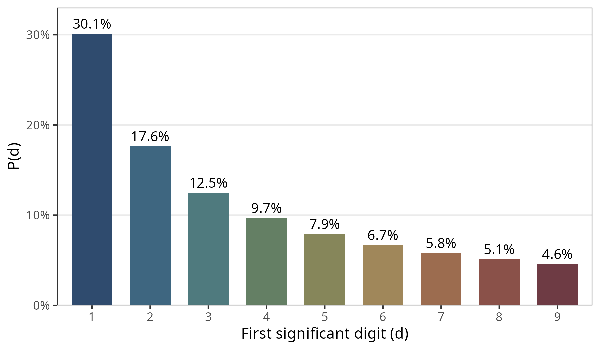
벤포드 분포의 첫 자리 확률(원고에서는 뺀 그림).
어떤 수가 100에서 시작해 매년 10%씩 늘어난다고 하자. 100에서 200이 되기까지(첫 자리 1)는 약 7년이 걸리지만, 900에서 1,000이 되기까지(첫 자리 9)는 약 1년이면 된다. 곱셈으로 커지는 수는 첫 자리 1에 오래 머문다. 거래량은 투자자 수 × 주문 크기 × 정보 도착 빈도 × 시간대별 활동처럼 여러 요인이 곱해져 정해지므로 이 규칙을 따르기 쉽다. 또 서로 다른 규모의 참여자가 뒤섞인 자료는 각자의 분포와 상관없이 벤포드 분포에 가까워진다(Hill, 1995).
반면 워시 트레이딩 프로그램은 정해진 범위의 수량이나 같은 크기의 주문을 반복하는 경우가 많다. 그러면 특정 첫 자리가 지나치게 자주 나온다. 아래 그림의 왼쪽(메탈, 2025년 6월)에서는 5와 6이 벤포드 비율보다 두 배 가까이 많다. 오른쪽(에이다, 2025년 9월)은 거의 완벽하게 일치한다.
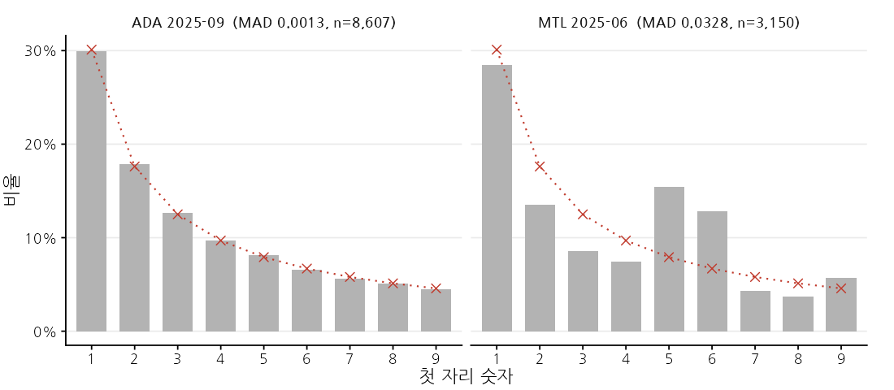
막대는 5분 거래량의 첫 자리 비율, × 표시와 점선은 벤포드 분포. 1,462개 종목–월 가운데 MAD가 큰 축과 작은 축의 예이다.
어긋남의 크기: MAD
적합도는 아홉 개 숫자 각각에서 관측 비율과 벤포드 비율의 차이를 절댓값으로 평균한 MAD(평균절대편차)로 잰다. 클수록 많이 벗어났다는 뜻이다. Nigrini (2012)는 첫 자리 MAD가 0.006 미만이면 ‘근접 적합’, 0.015를 넘으면 ‘비적합’으로 본다.
| MAD | 판정 |
|---|---|
| 0.006 미만 | 근접 적합(close conformity) |
| 0.006 이상 0.012 미만 | 수용 가능(acceptable conformity) |
| 0.012 이상 0.015 이하 | 경계적 수용(marginally acceptable) |
| 0.015 초과 | 비적합(nonconformity) |
자료: Nigrini (2012).
원고에 다 담지 못한 세 가지 함정
함정 1. 관측치가 적으면 정상이어도 MAD가 크다
벤포드 분포에서 완벽하게 뽑은 자료라도 표본이 유한하면 우연한 들쭉날쭉함 때문에 MAD가 0이 되지 않는다. 그 기댓값은 관측치 수 n이 작을수록 커진다.
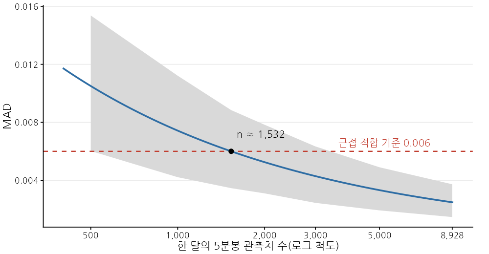
파란 선은 위 근사식, 회색 띠는 벤포드 분포에서 뽑은 모의 표본(각 2,000회)의 MAD 5~95% 범위. 한 달 관측치가 약 1,532개보다 적으면 워시 트레이딩이 전혀 없어도 MAD의 기댓값이 근접 적합 기준(0.006)을 넘는다.
한 달 최대 관측치(8,928개)에서 기댓값은 약 0.0025이지만, 관측치가 1,015개인 가장 적은 종목–월에서는 0.0074이다. 관측치 수는 곧 거래 활성도이므로, 그대로 비교하면 “거래가 적은 종목 = 워시 트레이딩이 많은 종목”으로 오해하게 된다. 그래서 이 연구는 MAD에서 이 기댓값을 뺀 초과 MAD를 주된 비교 지표로 썼다.
함정 2. χ² 검정은 거의 언제나 “벤포드 아님”이라고 답한다
통계 시간에 배우는 χ² 적합도 검정은 표본이 클수록 아주 작은 차이도 유의하게 만든다. 관측치가 수천 개인 종목–월에서는 실제로 의미 없는 차이에도 귀무가설이 기각된다. 실제로 전체 종목–월의 85.6%, 거래가 활발한 대형 그룹에서도 65.4%가 5% 수준에서 기각되었다. 그래서 χ²는 참고로만 보고 표본 크기에 덜 민감한 MAD를 썼다.
함정 3. 모두 합치면 완벽해 보인다
34개 종목의 거래량을 모두 합쳐 첫 자리 분포를 그리면 MAD가 시행 전 0.0021, 시행 후 0.0017로 둘 다 근접 적합이다([부록 그림-1]). 이질적인 자료를 섞으면 개별 종목의 이탈이 서로 상쇄되기 때문이다. 시장 전체 숫자만 보고 “문제없다”고 판단하면 안 되는 이유이며, 이 연구가 종목–월 단위로 측정한 이유이다.
수량이 아닌 원화 거래대금에는 벤포드 법칙을 쓰지 않았다. 매 시점 달라지는 가격을 곱하면 척도 불변성이 깨지기 때문이다. 또 이 연구는 개별 체결이 아니라 5분 동안의 합계를 쓰므로, 워시 트레이딩의 흔적이 정상 거래에 희석되어 체결 단위 분석보다 탐지력이 낮을 수 있다. 거래량이 좁은 범위에 몰린 종목(예: 리플, 이더리움)은 정상이어도 벤포드에서 벗어날 수 있다.
4지표 ② 멱법칙 꼬리지수 α: 큰 거래가 얼마나 자주 나오나
거래량 분포의 ‘오른쪽 꼬리’ 두께
금융시장의 거래 규모에는 정규분포로는 설명할 수 없을 만큼 아주 큰 값이 자주 나온다. 일정 크기 이상에서는 “크기가 x보다 클 확률”이 x의 거듭제곱으로 줄어드는 멱법칙을 따른다.
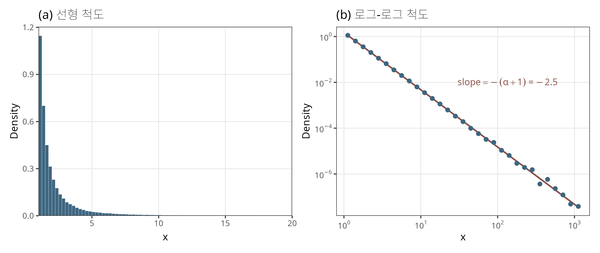
멱법칙(α=1.5) 모의 표본의 밀도(원고 초안의 그림). 보통 축(왼쪽)에서는 꼬리가 바닥에 붙어 보이지만, 두 축을 모두 로그로 바꾸면(오른쪽) 직선이 된다. 밀도의 기울기는 −(α+1), 누적분포(CCDF)의 기울기는 −α이다.
α가 작을수록 꼬리가 두껍다 — 즉 아주 큰 거래량이 상대적으로 자주 나온다. α가 1에서 2 사이(‘Pareto–Lévy 영역’)이면 분산이 무한대인 분포이다. 미국 주식의 체결 규모는 약 1.5, 구간 거래량 합계는 약 1.7로 이 영역에 있고, 이를 설명하는 이론도 여럿 있다(대형 투자자의 가격충격 고려, 군집행동 등).
추정에는 최우도법인 Hill 추정량을 썼고, 꼬리가 시작되는 지점 xmin은 거래량의 50~98% 분위수 후보 가운데 적합된 직선과 실제 분포의 차이(KS 거리)가 가장 작은 값으로 정하였다(Clauset et al., 2009). 평균적으로 꼬리는 90% 분위수에서 시작하였다. 대표 종목의 적합 예시는 [부록 그림-2]에 있다.
논쟁: α가 어느 쪽으로 움직여야 ‘좋은’ 것인가
정상 거래는 1<α<2에 있다. 프로그램이 일정 범위의 주문을 반복하면 중간 크기가 많아져 꼬리가 얇아지고(α≥2), 비정상적으로 큰 가짜 거래가 섞이면 지나치게 두꺼워진다(α≤1). → 이 영역을 벗어나면 의심.
해킹으로 유출된 Mt. Gox 내부 기록에서 실제 워시 트레이딩을 직접 식별해 보니, 워시 트레이딩 표본의 α는 1.58(영역 안), 정상 거래 표본은 2.05(영역 밖)였다. 벤포드·구조변화 방법은 직접 증거와 맞았지만 꼬리 기준만 반대였다.
α를 워시 트레이딩의 판정 기준이 아니라 상위 거래로의 집중 정도를 요약하는 보조 지표로 썼다. α가 내려갔다는 것은 “큰 5분 구간에 거래가 더 몰렸다”는 뜻일 뿐, 그것이 워시 트레이딩의 증가인지 감소인지는 이것만으로 말할 수 없다. 두꺼운 꼬리 자료는 멱법칙과 로그정규분포를 구분하기 어렵다는 점도 같은 이유이다.
5지표 ③ 변화점 탐지(PELT): 거래량의 계단
거래량 수준이 갑자기 바뀌어 한동안 유지된 횟수
앞의 두 지표는 거래량의 시간 순서를 보지 않는다. 그런데 워시 트레이딩 프로그램은 특정 시점에 켜지고 꺼지며, 켜져 있는 동안 시장 상황과 관계없이 거래량을 더한다. 그러면 거래량에 몇 시간에서 며칠 동안 이어지는 계단 모양의 변화가 남는다. 뉴스에 따른 진짜 거래 급증은 대개 금방 원래 수준으로 돌아온다. 그래서 지속적인 수준 변화가 몇 번 일어났는지(변화점 수)를 센다.
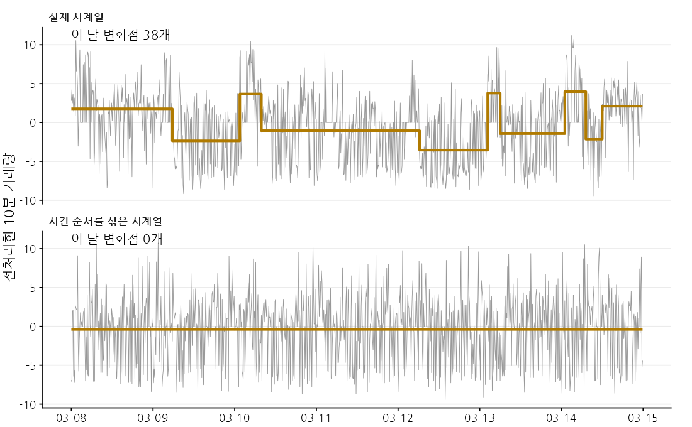
파워렛저(POWR) 2023년 3월 8~14일. 회색은 전처리한 10분 거래량, 황갈색 계단은 PELT가 나눈 구간의 평균(k=4). 같은 값들의 순서만 무작위로 섞으면(아래) 분포는 똑같지만 시간에 따른 변화가 없으므로 변화점이 하나도 잡히지 않는다.
어떻게 세나
- 10분 시계열 만들기: 5분봉을 10분 단위로 더하고, 거래가 없는 구간은 0으로 채운다(한 달 최대 4,464개).
- 정상적인 하루 리듬 빼기: 거래량은 밤보다 낮에 많다. 이런 일중 패턴이 변화점으로 잡히지 않도록 ln(1+거래량)에서 하루 144개 시간대별 중위수를 뺀다. 극단값은 상하위 0.5%에서 자른다.
- PELT로 나누기: 시계열을 몇 개의 구간으로 나누되, 구간 안은 비슷하고 구간 사이는 다르도록 나누는 최적 분할을 찾는다. 변화점 하나마다 벌점(k × ln n)을 매겨 쓸데없이 잘게 쪼개지 않게 한다. 구간의 비용은 분포 전체를 비교하는 비모수 비용(Haynes et al., 2017)이라 정규분포 가정이 필요 없고 꼬리와 0의 몰림 변화에도 반응한다.
- 일평균으로 바꾸기: 달마다 일수가 다르므로 변화점 수를 분석 일수로 나눈다. 앞 구간보다 평균이 오른 변화점(상향)과 내린 변화점(하향)도 따로 센다.
벌점은 어떻게 정했나: 섞은 시계열로 보정
벌점이 너무 작으면 잡음까지 변화점으로 잡고, 너무 크면 진짜 변화도 놓친다. 이 연구는 종목당 6개월씩 뽑은 204개 종목–월의 시계열을 시간 순서만 무작위로 섞었다. 섞은 시계열에서 잡히는 변화점은 모두 거짓이므로, 섞은 시계열의 95% 이상에서 변화점이 0개가 되는 가장 작은 벌점을 골랐다. 그 결과가 k=4(97.5%)이다([부록 표-6]).
이어 섞은 시계열에 인위적인 계단(크기 0.5·1·2 표준편차 × 지속 1시간·6시간·1일·1주)을 심어 탐지력을 점검하였다. 1 표준편차 이상의 이동이 6시간 이상 지속되면 92~100%를 찾아냈다. 반면 1시간짜리 작은 이동은 거의 잡지 못한다.
Amiram et al. (2025)은 EDM이라는 방법으로 변화점을 셌다. 그런데 그 논문의 벌점(β=0.002)을 빗썸 자료에 그대로 쓰면 섞은 시계열의 93.1%에서도 변화점이 잡히고(월평균 약 381개), 같은 방법으로 보정한 β=0.0275에서는 인위적으로 심은 계단의 적중률이 모든 조건에서 0.5% 이하였다. EDM은 시계열을 최솟값~최댓값으로 정규화한 뒤 벌점을 적용하기 때문에, 그 달의 극단값 하나가 나머지 변화를 압축해 버린다. 그래서 극단값에 영향을 받지 않는 PELT로 바꾸었다([부록 표-5]).
섞지 않은 실제 시계열에서는 1,462개 종목–월 모두에서 변화점이 잡혔다(k=4에서 월평균 약 21개). 실제 거래량에는 자기상관(오늘의 많은 거래가 내일로 이어지는 성질)이 있는데, 단순히 섞은 시계열로는 이를 반영하지 못하기 때문일 수 있다. 또 거래가 활발할수록 같은 크기의 변화도 잘 잡히므로 대형 그룹(일평균 0.87개)이 중소형(0.66개)보다 변화점이 많다. 그러므로 변화점 수의 절대 수준이 아니라 시행 전후의 상대적 변화를 본다.
6법의 효과를 가려내는 방법
지표가 시행 후에 달라졌다고 해서 곧 법의 효과는 아니다. 같은 시기에 시장이 크게 올랐고, 거래소 수수료 정책도 바뀌었다. 이 연구는 다섯 단계로 대안 설명을 하나씩 걸러냈다.
종목별 시행 전 25개월 평균과 시행 후 17개월 평균을 비교한다. 종목 수가 8개·26개로 적고 분포가 치우쳐 있어 순위를 쓰는 Wilcoxon 부호순위 검정을 썼다.
대형 그룹의 변화를 ‘법이 아니어도 일어났을 변화’로 보고, 중소형 그룹의 변화에서 뺀다. 두 그룹에 공통인 시장 국면을 걸러낸다.
시행 전부터 두 그룹이 다른 방향으로 움직였다면 DiD는 그 추세까지 법의 효과로 잡는다. 그룹별 추세를 허용한 모형과 반기별 이벤트 스터디로 점검한다.
8개 사건 각각의 전후 3개월을 같은 방법으로 비교한다. 다른 사건에서도 같은 크기의 변화가 있다면 법만의 특별한 변화가 아니다. 반복 검정이므로 Holm 보정도 함께 본다.
같은 종목의 바이낸스 지표는 국내법의 영향을 받지 않는다. 빗썸에서만 나타난 변화(거래소 이중차분)와, 그룹 간 차이가 두 거래소에서 다른지(삼중차분)를 본다.
34개 종목 × 42개월(시행월 제외) = 1,428개 종목–월. 종목 고정효과와 월 고정효과를 넣고, 같은 종목의 오차가 서로 상관된 점을 고려해 종목 단위 군집 표준오차를 썼다.
이중차분을 그림으로
월 고정효과는 그 달 모든 종목에 공통인 충격(코인 시장 급등, 비상계엄 등)을 흡수한다. β는 “시행 후 중소형 그룹의 지표가 대형 그룹에 비해 얼마나 더 변했는가”이다. 여기서 대형 그룹도 법의 영향을 받았을 수 있으므로, β는 법의 절대 효과가 아니라 두 그룹에 미친 효과의 차이라는 점에 유의해야 한다.
(나)처럼 시행 전부터 벌어지고 있었다면 추세 허용 모형이 맞다. 그러나 γ는 시행 전후 전체 기간으로 추정되므로, 만약 법이 시행 후 기울기를 바꾸었다면 그 몫까지 ‘원래 있던 추세’로 흡수해 버린다. 그래서 원고는 시행 전 기간만으로 추세 차이를 따로 추정하고, 시행 직전 반기(2024년 상반기)를 기준으로 반기마다 그룹 간 차이를 찍어 보는 이벤트 스터디도 함께 보았다. 기본 모형과 추세 허용 모형은 서로 반대 방향으로 치우칠 수 있으므로, 둘 중 하나만으로 결론을 내리지 않는다.
같은 종목이라면 코인 자체의 사건(기능 출시, 토큰 전환)과 세계 시장 국면은 빗썸과 바이낸스에 함께 영향을 준다. 그래서 종목×월 고정효과로 두 거래소에 공통된 변화를 지우면 빗썸에서만 나타난 변화가 남는다(거래소 이중차분). 다만 빗썸은 원화, 바이낸스는 USDT로 거래되어 투자자와 호가 단위가 다르고, 시행 후 빗썸에는 수수료 무료 재개(⑥)와 자전거래 방지 시스템(⑦)도 있었다. 따라서 ‘빗썸 고유’는 ‘법 시행 효과’와 같은 말이 아니다.
7결과 ① 벤포드 법칙
시행 후 대형 그룹은 적합도가 좋아지고, 중소형 그룹은 나빠졌다. 기본 이중차분으로는 그 격차가 유의하게 벌어졌다. 그러나 법이 적용되지 않는 바이낸스의 같은 종목에서도 같은 방향·비슷한 폭으로 나타나, 법 시행 고유의 변화로 보기 어렵다.
대체로 벤포드를 따르지만 중소형의 이탈이 크다
1,462개 종목–월의 MAD 중위수는 0.0084이고, 경계적 수용까지 포함하면 84.1%가 Nigrini 기준을 충족하였다. 대형 그룹의 MAD 중위수는 0.0047(비적합 4.1%), 중소형은 0.0096(비적합 19.5%)이다. 관측치 수를 반영한 초과 MAD로도 중소형(0.0072)이 대형(0.0034)의 약 2.1배여서, 이 차이는 표본 크기만으로 설명되지 않는다.
[표 6] 종목–월 첫 자리 MAD 분포 · [그림 2] 종목–월 초과 MAD 히트맵
| 구분 | 종목–월 개수 | 평균 | 표준편차 | 중위수 | E[MAD] 평균 | 초과 MAD 평균 | 근접 적합(%) | Nigrini 비적합(%) | χ² 중위수 | χ² 기각(%) |
|---|---|---|---|---|---|---|---|---|---|---|
| 전체 | 1,462 | 0.0097 | 0.0059 | 0.0084 | 0.0034 | 0.0063 | 31.2 | 15.9 | 46.0 | 85.6 |
| 대형 | 344 | 0.0060 | 0.0044 | 0.0047 | 0.0026 | 0.0034 | 67.7 | 4.1 | 23.2 | 65.4 |
| 중소형 | 1,118 | 0.0108 | 0.0059 | 0.0096 | 0.0036 | 0.0072 | 19.9 | 19.5 | 53.1 | 91.8 |
주: 초과 MAD는 MAD에서 관측치 수에 따른 기댓값 E[MAD]를 뺀 값. 근접적합은 MAD < 0.006, Nigrini 비적합은 MAD > 0.015. χ² 검정은 5% 수준(χ²>15.51).
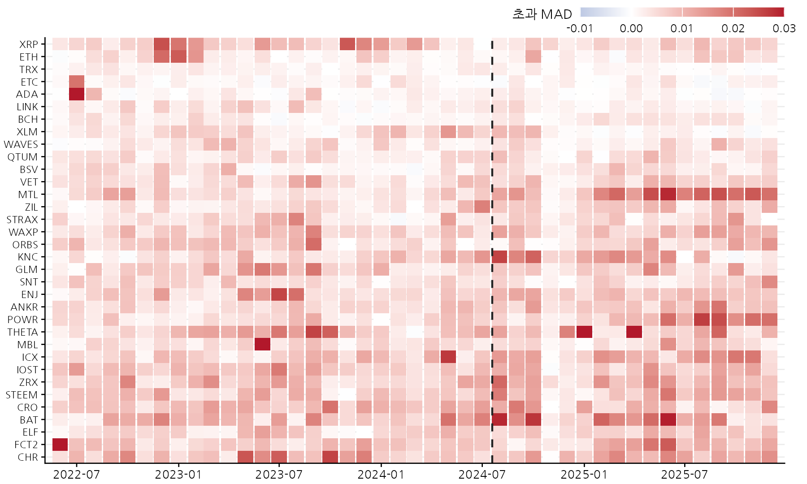
주: 종목은 관측비율 순으로 위에서 아래로 정렬. 점선은 법 시행일(2024년 7월 19일).
극단적인 이탈은 특정 종목에 몰려 있지 않고 두 그룹과 시행 전후에 고루 흩어져 있다(가장 큰 값: 쎄타 네트워크 2025년 1월 0.046, 에이다 2022년 7월 0.040).
시행 전후: 반대 방향으로
대형 그룹의 MAD는 0.0066에서 0.0051로 낮아졌고(8개 중 7개 감소, p=0.059), 시행 후에는 비적합 종목–월이 하나도 없었다. 중소형 그룹은 0.0100에서 0.0120으로 높아졌고(26개 중 20개 증가, p=0.003), 비적합 월 비율도 13.8%에서 27.6%로 두 배가 되었다.
| 구분 | 종목수 | MAD 시행전 | MAD 시행후 | MAD p값 | 초과 MAD 시행전 | 초과 MAD 시행후 | 초과 MAD p값 | Nigrini 비적합 비율(월,%) 시행전 | Nigrini 비적합 비율(월,%) 시행후 |
|---|---|---|---|---|---|---|---|---|---|
| 전체 | 34 | 0.0092 | 0.0104 | 0.091 | 0.0058 | 0.0070 | 0.040 | 12.2 | 21.1 |
| 대형 | 8 | 0.0066 | 0.0051 | 0.059 | 0.0040 | 0.0026 | 0.059 | 7.0 | 0.0 |
| 중소형 | 26 | 0.0100 | 0.0120 | 0.003 | 0.0064 | 0.0084 | <0.001 | 13.8 | 27.6 |
주: 종목별 월평균값의 그룹 내 평균. p값은 Wilcoxon 부호순위 검정 결과(종목별 시행 전후)
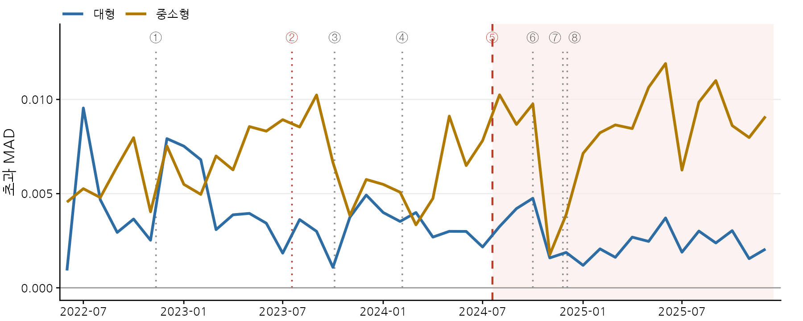
주: 번호는 [표 5]의 사건 번호이며, 빨간 점선은 가상자산이용자보호법의 공포(②)와 시행(⑤)을 의미
이중차분: 기본 모형에서는 유의, 추세에 따라 달라진다
기본 이중차분 β는 0.0035(p<0.001)로, 시행 후 중소형 그룹의 MAD가 대형에 비해 시행 전 중소형 평균의 약 35%만큼 더 높아졌다. 그런데 그룹별 선형 추세를 허용하면 중소형이 매월 0.00013씩 더 나빠지는 추세가 유의하였고(p=0.006), 이를 통제한 시행 효과는 0.0006(p=0.664)으로 사라졌다.
반대로 시행 전 기간만 보면 추세 차이는 10% 수준에서만 유의하였고(p=0.099), 반기별 이벤트 스터디에서도 시행 전 반기들의 차이는 모두 5% 수준에서 유의하지 않았다. 격차는 시행 후 2025년 상반기(0.0049)와 하반기(0.0047)에 크게 벌어졌다. 즉 “시행 이전 추세의 연장”으로만 보기도, “시행 효과”로 보기도 어려운, 추세 가정에 민감한 결과이다.
| 구분 | MAD 추정치 | MAD 표준오차 | MAD p값 | 초과 MAD 추정치 | 초과 MAD 표준오차 | 초과 MAD p값 | |
|---|---|---|---|---|---|---|---|
| 기본 | 이중차분(β) | 0.0035 | 0.0008 | <0.001 | 0.0034 | 0.0008 | <0.001 |
| 그룹 추세 모형 | 추세 차이(월당) | 0.00013 | 0.00005 | 0.006 | 0.00013 | 0.00004 | 0.007 |
| 시행효과 | 0.0006 | 0.0013 | 0.664 | 0.0006 | 0.0013 | 0.641 | |
| 시행 전 기간 | 추세 차이(월당) | 0.00010 | 0.00006 | 0.099 | 0.00011 | 0.00006 | 0.083 |
주: 그룹추세모형은 기본 모형에 중소형 그룹의 선형 추세 항을 포함한 모형으로, 추세 차이는 시행 전후 전체 기간으로 추정함. 시행 전 기간 추세 차이는 2022년 6월~2024년 6월 자료만으로 추정한 값임
다른 사건과 비교: 수수료 무료화 때 더 크게 움직였다
법 시행(⑤) 직후 3개월만 보면 중소형(0.0068→0.0096)과 대형(0.0029→0.0041)이 함께 나빠져, 두 그룹의 변화 폭에 차이가 없었다(p=0.282). 오히려 중소형 그룹의 적합도는 수수료 무료 시작(③, 0.0092→0.0050)과 무료 재개(⑥, 0.0089→0.0043) 직후에 크게 좋아졌다. 다만 이 시기는 시장 회복기·급등기와 겹치고, 수수료가 다시 붙은 ④ 때는 되돌아가지 않아, 수수료 정책과 시장 활황이 함께 작용한 것으로 보인다. 거래가 늘면 정상 거래의 비중이 커지고 분포 폭도 넓어져 적합도가 좋아지기 때문이다.
[표 9] 주요 사건 전후 3개월의 초과 MAD 비교
| 번호 | 사건 | 대형 사건전 | 대형 사건후 | 대형 p값 | 중소형 사건전 | 중소형 사건후 | 중소형 p값 | 그룹 간 차이 | 그룹 간 p값 |
|---|---|---|---|---|---|---|---|---|---|
| ① | FTX 파산 | 0.0038 | 0.0074 | 0.441 | 0.0064 | 0.0060 | 0.275 | −0.0041 | 0.201 |
| ② | 법 공포 | 0.0038 | 0.0026 | 0.183 | 0.0077 | 0.0085 | 0.334 | 0.0019 | 0.092 |
| ③ | 빗썸 수수료 무료 시작 | 0.0028 | 0.0042 | 0.363 | 0.0092 | 0.0050 | <0.001 | −0.0056 | 0.008 |
| ④ | 빗썸 수수료 유료 전환 | 0.0042 | 0.0032 | 1.000 | 0.0050 | 0.0057 | 0.162 | 0.0017 | 0.282 |
| ⑤ | 법 시행 | 0.0029 | 0.0041 | 0.042 | 0.0068 | 0.0096 | 0.003 | 0.0016 | 0.282 |
| ⑥ | 빗썸 수수료 무료 재개 | 0.0032 | 0.0016 | 0.141 | 0.0089 | 0.0043 | <0.001 | −0.0030 | 0.037 |
| ⑦ | 빗썸 자전거래 방지 시스템 적용 | 0.0041 | 0.0017 | 0.059 | 0.0096 | 0.0064 | <0.001 | −0.0008 | 0.383 |
| ⑧ | 비상계엄 선포 | 0.0035 | 0.0016 | 0.107 | 0.0067 | 0.0080 | 0.104 | 0.0032 | 0.014 |
주: 전은 사건월 직전 3개월, 후는 직후 3개월이며 사건월은 제외. 그룹내 p값은 Wilcoxon 부호순위 검정 결과이고, 그룹 간 차이는 (중소형 변화 − 대형 변화) 값이며, p값은 Wilcoxon 순위합 검정 결과임
Holm 보정 후에는 중소형 그룹 안의 변화만 ③·⑤·⑥·⑦에서 유의하게 남았고, 대형 그룹 안의 변화와 그룹 간 차이는 모든 사건에서 유의하지 않았다. 자전거래 방지 시스템(⑦)은 같은 계정의 API 주문끼리만 막으므로 다른 계정을 쓰는 워시 트레이딩에는 영향을 주지 않는다는 점도 고려해야 한다.
바이낸스와 비교: 같은 방향으로 움직였다
26개 종목으로 보면, 중소형 그룹의 초과 MAD는 빗썸(0.0065→0.0093)과 바이낸스(0.0024→0.0051)에서 비슷한 폭으로 높아졌다. 바이낸스 대비 빗썸의 차이는 0.0001(p=0.980)로 사실상 0이다. 대형 그룹의 개선도 바이낸스(0.0101→0.0054)에서 더 컸다. 두 거래소의 그룹 간 격차 확대 차이(삼중차분)는 −0.0033(p=0.304)으로 유의하지 않았다.
| 구분 | 빗썸 시행 전 | 빗썸 시행 후 | 바이낸스 시행 전 | 바이낸스 시행 후 | 추정치 | p | 추세 허용 추정치 | p |
|---|---|---|---|---|---|---|---|---|
| 대형(8) | 0.0040 | 0.0026 | 0.0101 | 0.0054 | 0.0033 | 0.045 | 0.0032 | 0.048 |
| 중소형(18) | 0.0065 | 0.0093 | 0.0024 | 0.0051 | 0.0001 | 0.980 | −0.0015 | 0.614 |
| 이중차분: 빗썸 | 0.0042 | <0.001 | ||||||
| 이중차분: 바이낸스 | 0.0075 | 0.018 | ||||||
| 삼중차분 | −0.0033 | 0.304 | −0.0048 | 0.153 |
주: 그룹 간 이중차분은 거래소별로 추정한 중소형 그룹의 상대적 변화이고, 삼중차분은 두 거래소를 함께 넣은 모형의 계수이며 그 추세 허용 모형은 빗썸의 선형 추세와 그 중소형 상호작용 항을 더한 것이다.
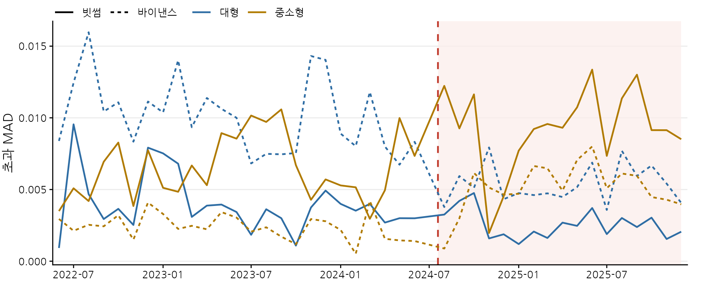
주: 26개 종목의 그룹별 월평균이다. 실선은 빗썸, 점선은 바이낸스이며, 파란색은 대형 그룹, 황갈색은 중소형 그룹이다. 빨간 점선은 법 시행일(2024년 7월 19일)이다.
8결과 ② 꼬리지수 α
시행 후 두 그룹 모두 α가 비슷한 폭으로 낮아졌다(상위 구간으로 거래가 더 몰림). 그룹 간 차이는 없었고, 하락은 분석기간 초부터 완만하게 이어진 추세였다. 바이낸스에는 없는 빗썸 고유의 변화였지만 이때도 그룹 간 차이는 없었다.
전체 종목–월의 α 중위수는 1.53이고 77.2%가 Pareto–Lévy 영역(1<α<2)에 있었다. 대형 그룹은 중위수 1.89로 꼬리가 얇은 편이고(41.0%가 α≥2), 중소형은 1.44로 두꺼우며 α≤1인 극단적 꼬리도 7.9%였다. 중소형 종목에서는 거래량 상위 10% 구간이 그 달 거래량의 66.0%를 차지한다([부록 표-3]).
[표 11] 종목–월 꼬리지수 추정 결과
| 구분 | 종목–월 수 | α 평균 | α 표준편차 | α 중위수 | Pareto–Lévy(%) | α≤1(%) | α≥2(%) | xmin 분위수 | 꼬리 관측치 |
|---|---|---|---|---|---|---|---|---|---|
| 전체 | 1,462 | 1.58 | 0.44 | 1.53 | 77.2 | 6.2 | 16.6 | 0.901 | 542 |
| 대형 | 344 | 1.94 | 0.44 | 1.89 | 58.1 | 0.9 | 41.0 | 0.906 | 786 |
| 중소형 | 1,118 | 1.47 | 0.37 | 1.44 | 83.0 | 7.9 | 9.1 | 0.900 | 467 |
주: α는 CCDF 지수이며, xmin은 거래량 50~98% 분위수 후보 중 Kolmogorov-Smirnov 거리를 최소화하는 값. xmin 분위수는 xmin이 해당 종목-월 거래량 분포에서 위치하는 분위수의 평균.
시행 전후: 두 그룹 모두 하락
대형 그룹은 1.99에서 1.87로(8개 중 7개 감소, p=0.030), 중소형은 1.51에서 1.42로(26개 중 21개 감소, p=0.005) 낮아졌다. 의미는 다르다. 대형 그룹은 얇았던 꼬리가 Pareto–Lévy 영역 안으로 들어왔고(52.0%→67.6%), 중소형은 α≤1인 극단적 꼬리 비율이 5.7%에서 11.1%로 두 배 가까이 늘었다. 중소형의 상위 1% 구간 비중도 23.5%에서 26.5%로 높아졌다. 평상시 거래가 줄어 소수의 큰 구간에 거래가 몰린 모습이다.
| 구분 | 종목 수 | α 시행전 | α 시행후 | α p값 | Pareto–Lévy(%) 시행전 | Pareto–Lévy(%) 시행후 | α≤1(%) 시행전 | α≤1(%) 시행후 |
|---|---|---|---|---|---|---|---|---|
| 전체 | 34 | 1.62 | 1.53 | <0.001 | 76.5 | 78.2 | 4.7 | 8.5 |
| 대형 | 8 | 1.99 | 1.87 | 0.030 | 52.0 | 67.6 | 1.5 | 0.0 |
| 중소형 | 26 | 1.51 | 1.42 | 0.005 | 84.0 | 81.4 | 5.7 | 11.1 |
주: 종목별 월평균값의 그룹 내 평균. p값은 종목별 시행 전후 값에 대한 Wilcoxon 부호순위 검정 결과이다. Pareto-Lévy와 α≤1 비율은 해당 기간 종목-월 기준이다.
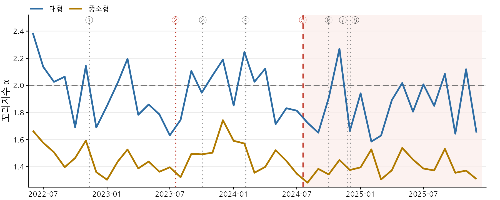
주: 그룹 내 종목-월 α의 월별 중위수. 회색 점선은 Pareto-Lévy 영역(1<α<2)의 상한(α=2)을, 빨간 점선은 가상자산이용자보호법의 공포(②)와 시행(⑤) 시점을 나타냄
이중차분·사건·해외 비교
이중차분 추정치(0.032, p=0.591)와 추세를 허용한 시행 효과(−0.045, p=0.698)는 모두 유의하지 않았고, 시행 전 추세 차이와 반기별 차이도 없었다. 사건별로는 수수료 무료 시작(③) 후 두 그룹 모두 α가 높아지고(꼬리가 얇아짐), 유료 전환(④) 후 중소형이 되돌아간 것이 가장 뚜렷하였다. Holm 보정 후에도 남는 것은 이 두 시점의 중소형 변화뿐이다.
바이낸스에서는 α가 오히려 조금 높아져(대형 1.83→1.87, 중소형 1.56→1.63), 빗썸의 하락은 두 그룹 모두 빗썸 고유의 변화였다(거래소 이중차분 약 −0.16). 그러나 그 크기가 두 그룹에서 같아(삼중차분 −0.002, p=0.986), 워시 트레이딩 유인이 큰 중소형에 집중된 변화가 아니었다.
| 구분 | 추정치 | 표준오차 | p값 | |
|---|---|---|---|---|
| 기본 | 이중차분(β) | 0.032 | 0.058 | 0.591 |
| 그룹 추세 모형 | 추세 차이(월당) | 0.0035 | 0.0054 | 0.527 |
| 시행효과 | −0.045 | 0.114 | 0.698 | |
| 시행 전 기간 | 추세 차이(월당) | 0.0062 | 0.0068 | 0.368 |
주: 추정 방법은 [표 8]과 같음
[표 14] 주요 사건 전후 3개월의 α · [표 15] 빗썸과 바이낸스 비교 · [그림 6]
| 번호 | 사건 | 대형 사건전 | 대형 사건후 | 대형 p값 | 중소형 사건전 | 중소형 사건후 | 중소형 p값 | 그룹 간 차이 | 그룹 간 p값 |
|---|---|---|---|---|---|---|---|---|---|
| ① | FTX 파산 | 1.97 | 1.86 | 0.529 | 1.50 | 1.35 | 0.014 | −0.04 | 0.612 |
| ② | 법 공포 | 1.80 | 1.96 | 0.080 | 1.42 | 1.46 | 0.525 | −0.13 | 0.187 |
| ③ | 빗썸 수수료 무료 시작 | 1.87 | 2.06 | 0.042 | 1.44 | 1.68 | <0.001 | 0.05 | 0.556 |
| ④ | 빗썸 수수료 유료 전환 | 2.06 | 1.98 | 0.624 | 1.68 | 1.48 | <0.001 | −0.11 | 0.282 |
| ⑤ | 법 시행 | 1.91 | 1.76 | 0.183 | 1.50 | 1.37 | 0.054 | 0.02 | 0.761 |
| ⑥ | 빗썸 수수료 무료 재개 | 1.74 | 1.94 | 0.141 | 1.37 | 1.45 | 0.243 | −0.13 | 0.264 |
| ⑦ | 빗썸 자전거래 방지 시스템 적용 | 1.76 | 1.79 | 0.834 | 1.37 | 1.47 | 0.075 | 0.07 | 0.612 |
| ⑧ | 비상계엄 선포 | 1.93 | 1.81 | 0.363 | 1.40 | 1.43 | 0.594 | 0.14 | 0.128 |
주: 값은 종목별 기간 평균 α의 그룹 내 평균을 나타냄.
| 구분 | 빗썸 시행 전 | 빗썸 시행 후 | 바이낸스 시행 전 | 바이낸스 시행 후 | 추정치 | p | 추세 허용 추정치 | p |
|---|---|---|---|---|---|---|---|---|
| 대형(8) | 1.99 | 1.87 | 1.83 | 1.87 | −0.155 | 0.086 | −0.219 | 0.042 |
| 중소형(18) | 1.53 | 1.44 | 1.56 | 1.63 | −0.157 | 0.013 | −0.152 | 0.039 |
| 이중차분: 빗썸 | 0.026 | 0.674 | ||||||
| 이중차분: 바이낸스 | 0.028 | 0.737 | ||||||
| 삼중차분 | −0.002 | 0.986 | 0.067 | 0.539 |
주: 그룹 간 이중차분은 거래소별로 추정한 중소형 그룹의 상대적 변화이고, 삼중차분은 두 거래소를 함께 넣은 모형의 계수이며 그 추세 허용 모형은 빗썸의 선형 추세와 그 중소형 상호작용 항을 더한 것이다.
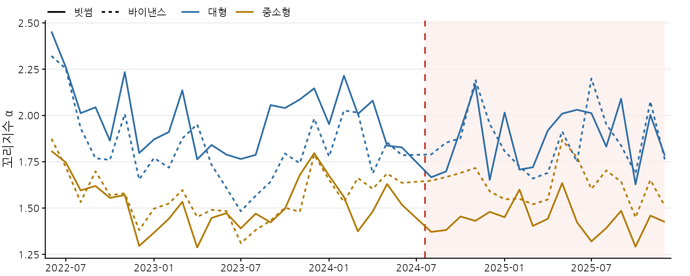
주: 26개 종목의 그룹별 월평균이다. 실선은 빗썸, 점선은 바이낸스이며, 파란색은 대형 그룹, 황갈색은 중소형 그룹이다. 빨간 점선은 법 시행일(2024년 7월 19일)이다.
9결과 ③ 변화점 수
시행 후 중소형 그룹의 변화점이 8.3% 줄었고, 거래량을 올렸다(상향) 내린(하향) 변화가 함께 줄었다. 워시 트레이딩 프로그램의 가동·중단이 줄었다면 기대되는 모양이다. 그러나 대형 그룹과의 차이는 유의하지 않았고, 거래 활성도의 저하와 함께 움직였으며, 추세를 허용하면 바이낸스 대비 효과도 사라졌다.
[표 16] 비모수 PELT 변화점 탐지 결과
| 구분 | 종목 수 | 종목–월 수 | 종목–월당 변화점 수 | 일평균 평균 | 일평균 P10 | 일평균 중위수 | 일평균 P90 | 상향 비중(%) | 관측비율 순위상관 | MAD 순위상관 |
|---|---|---|---|---|---|---|---|---|---|---|
| 전체 | 34 | 1,462 | 21.6 | 0.71 | 0.39 | 0.70 | 1.03 | 46.1 | 0.63 | −0.44 |
| 대형 | 8 | 344 | 26.4 | 0.87 | 0.58 | 0.86 | 1.17 | 45.5 | 0.62 | 0.07 |
| 중소형 | 26 | 1,118 | 20.1 | 0.66 | 0.35 | 0.66 | 0.97 | 46.4 | 0.42 | −0.48 |
주: 일평균은 종목-월 변화점 수를 해당 월의 일수로 나눈 값이며, 상향비중은 변화점 전후 구간 평균이 높아진 변화점의 비율을 의미. 관측비율 순위상관은 종목별 기간 평균 일평균 변화점 수와 관측비율 간, MAD 순위상관은 종목-월 일평균 변화점 수와 첫자리 MAD 간의 Spearman 순위상관계수를 나타냄.
변화점 수는 MAD와 음의 상관(−0.44)을 보여, 두 지표가 같은 방향으로 워시 트레이딩을 가리키지 않았다. 두 지표 모두 거래 활성도와 관련되기 때문으로 보인다.
시행 전후: 중소형만 감소
중소형 그룹의 일평균 변화점 수는 0.685개에서 0.628개로 줄었고(26개 중 19개 감소, p=0.022), 대형 그룹은 0.872개에서 0.866개로 변하지 않았다(p=0.834). 중소형에서는 상향 변화점이 9.4%, 하향 변화점이 7.4% 줄어 두 방향이 비슷한 비율로 함께 줄었다. 한쪽만 줄었다면 추세의 변화일 가능성이 크지만, 함께 줄었다면 “끌어올렸다가 되돌리는” 이동 자체가 줄었다는 뜻이다.
| 구분 | 종목수 | 시행전 | 시행후 | p값 | 상향 시행전 | 상향 시행후 | 하향 시행전 | 하향 시행후 |
|---|---|---|---|---|---|---|---|---|
| 전체 | 34 | 0.729 | 0.684 | 0.030 | 0.336 | 0.314 | 0.392 | 0.370 |
| 대형 | 8 | 0.872 | 0.866 | 0.834 | 0.394 | 0.397 | 0.478 | 0.469 |
| 중소형 | 26 | 0.685 | 0.628 | 0.022 | 0.319 | 0.289 | 0.366 | 0.339 |
주: 상향(하향)은 변화점 뒤 구간의 평균이 앞 구간보다 높은(낮은) 변화점을 의미함. p값은 종목별 시행 전후 값에 대한 Wilcoxon 부호순위 검정 결과를 나타냄
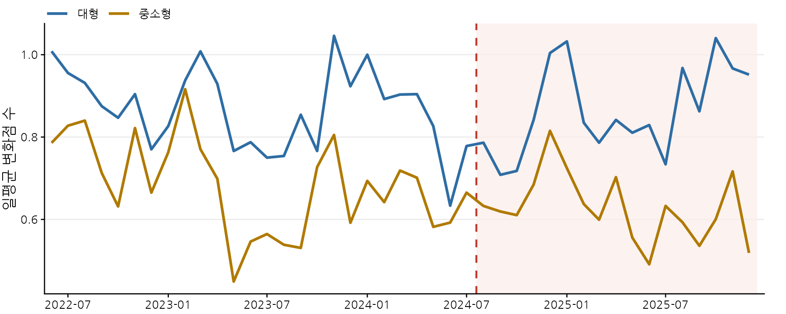
주: 그룹내 종목-월 일평균 변화점 수의 월별 평균. 빨간 점선은 법 시행일(2024년 7월 19일)을 나타냄
그러나 그룹 간 차이는 유의하지 않았다
이중차분 추정치는 −0.051로 중소형이 더 줄어드는 방향이었지만 유의하지 않았다(p=0.197). 대형 그룹 안에서 이더리움은 늘고 이더리움 클래식·비트코인 캐시는 줄어 방향이 엇갈린 것도 한 이유이다. 그룹별 선형 추세를 허용하면 부호가 양(+0.096, p=0.079)으로 바뀌었다.
또 중소형 종목 가운데 관측비율이 많이 떨어진 종목일수록 변화점도 많이 줄었다(종목별 변화량 사이 순위상관 0.83). 종목–월 관측비율을 통제하면 이중차분은 −0.018(p=0.574)로 0에 가까워진다. 다만 관측비율 자체가 시행 후 거래 위축을 반영하는 ‘결과 변수’일 수 있어, 이 통제가 시행 효과의 일부까지 지울 수 있다. 시행 전 평균 관측비율로 바꿔 통제하면 −0.065(p=0.214)로 기본 결과와 비슷하다. 벌점을 k=3·5·6으로 바꿔도 중소형의 감소만 유의하고 그룹 간 차이는 유의하지 않았다([부록 표-7]).
| 구분 | 추정치 | 표준오차 | p | |
|---|---|---|---|---|
| 기본 | 이중차분(β) | −0.051 | 0.038 | 0.197 |
| 그룹추세 | 추세 차이(월당) | −0.0067 | 0.0023 | 0.007 |
| 시행효과 | 0.096 | 0.053 | 0.079 | |
| 시행 전 기간 | 추세 차이(월당) | −0.0036 | 0.0023 | 0.127 |
| 관측비율통제 | 시행효과 | −0.018 | 0.032 | 0.574 |
| 시행 전 관측비율 통제 | 시행효과 | −0.065 | 0.051 | 0.214 |
주: 관측비율통제는 종목–월 관측비율을, 시행 전 관측비율 통제는 종목별 시행 전 평균 관측비율(표준화)과 시행 후 더미의 곱을 기본 모형에 더한 것임. 그 밖의 추정 방법은 [표 8]과 같음
사건과 해외 비교
법 시행(⑤)과 공포(②) 전후 3개월에는 두 그룹 모두 유의한 변화가 없었다. 유의한 변화는 수수료 무료화(③·⑥) 직후 변화점이 늘어난 경우였다. 바이낸스에서는 중소형의 변화점이 변하지 않아(0.855→0.852), 빗썸 중소형의 감소(0.676→0.579)는 빗썸 고유였다(거래소 이중차분 −0.094, p=0.020). 하지만 거래소별 추세를 허용하면 +0.025(p=0.511)로 사라졌고, 26개 종목에서만 그룹 간 차이가 커진 것은 비교에서 빠진 중소형 8개 종목의 변화점이 오히려 늘었기 때문이어서 표본 구성에 따라 결과가 달라진다.
[표 19] 주요 사건 전후 3개월의 변화점 · [표 20] 빗썸과 바이낸스 비교 · [그림 8]
| 번호 | 사건 | 대형 사건전 | 대형 사건후 | 대형 p값 | 중소형 사건전 | 중소형 사건후 | 중소형 p값 | 그룹간 차이 | 그룹간 p값 |
|---|---|---|---|---|---|---|---|---|---|
| ① | FTX 파산 | 0.88 | 0.85 | 0.107 | 0.73 | 0.78 | 0.110 | 0.09 | 0.059 |
| ② | 법 공포 | 0.83 | 0.79 | 0.624 | 0.57 | 0.60 | 0.611 | 0.07 | 0.383 |
| ③ | 빗썸 수수료 무료 시작 | 0.79 | 0.99 | 0.142 | 0.55 | 0.70 | 0.003 | −0.05 | 0.919 |
| ④ | 빗썸 수수료 유료 전환 | 0.99 | 0.88 | 0.059 | 0.70 | 0.67 | 0.187 | 0.08 | 0.216 |
| ⑤ | 법 시행 | 0.79 | 0.74 | 0.834 | 0.63 | 0.62 | 0.493 | 0.05 | 0.855 |
| ⑥ | 빗썸 수수료 무료 재개 | 0.76 | 0.96 | 0.014 | 0.64 | 0.74 | 0.013 | −0.10 | 0.529 |
| ⑦ | 빗썸 자전거래 방지 시스템 적용 | 0.74 | 0.96 | 0.059 | 0.62 | 0.73 | 0.010 | −0.11 | 0.264 |
| ⑧ | 비상계엄 선포 | 0.76 | 0.88 | 0.107 | 0.64 | 0.65 | 0.388 | −0.11 | 0.118 |
| 구분 | 빗썸 시행 전 | 빗썸 시행 후 | 바이낸스 시행 전 | 바이낸스 시행 후 | 추정치 | p | 추세 허용 추정치 | p |
|---|---|---|---|---|---|---|---|---|
| 대형(8) | 0.872 | 0.866 | 1.022 | 1.026 | −0.010 | 0.715 | 0.071 | 0.193 |
| 중소형(18) | 0.676 | 0.579 | 0.855 | 0.852 | −0.094 | 0.020 | 0.025 | 0.511 |
| 이중차분: 빗썸 | −0.091 | 0.028 | ||||||
| 이중차분: 바이낸스 | −0.007 | 0.857 | ||||||
| 삼중차분 | −0.083 | 0.069 | −0.046 | 0.443 |
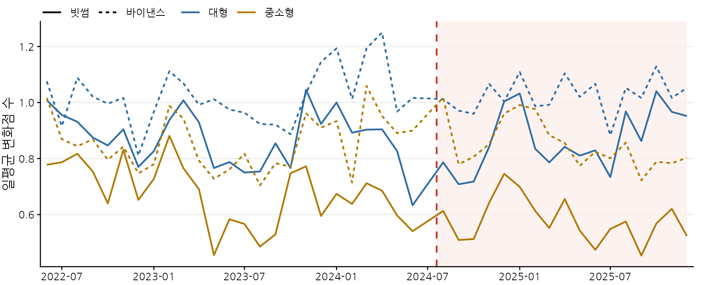
주: 26개 종목의 그룹별 월평균이다. 실선은 빗썸, 점선은 바이낸스이며, 파란색은 대형 그룹, 황갈색은 중소형 그룹이다. 빨간 점선은 법 시행일(2024년 7월 19일)이다.
10종합: 다섯 개의 관문
법 시행의 효과라고 말하려면 각 지표가 다음 관문을 모두 통과해야 한다. 아래는 원고 결과를 그 관점에서 다시 정리한 것이다.
| 관문 | 벤포드(초과 MAD) | 꼬리지수 α | 변화점 수 |
|---|---|---|---|
| ① 시행 후 중소형 그룹이 변했나 | 예 — 악화 0.0064→0.0084 | 예 — 하락 1.51→1.42 | 예 — 감소 0.685→0.628 |
| ② 대형 그룹보다 더 변했나 (기본 DiD) | 예 — 0.0034, p<0.001 | 아니오 — p=0.591 | 아니오 — p=0.197 |
| ③ 시행 전 추세로 설명되지 않나 | 불분명 — 추세 허용 시 p=0.641, 시행 전 추세 p=0.083 | — (②에서 차이 없음) | 불분명 — 추세 허용 시 부호 반대(+0.096) |
| ④ 다른 사건 때보다 두드러졌나 | 아니오 — 수수료 무료화 때 더 큼 | 아니오 — 수수료 정책 시점에 더 큼 | 아니오 — 시행 전후 유의한 변화 없음 |
| ⑤ 바이낸스에는 없는 변화인가 | 아니오 — 바이낸스에서도 같은 폭 | 빗썸 고유이나 그룹 차이 없음 | 빗썸 고유이나 추세 허용 시 사라짐 |
숫자는 원고 [표 7]·[표 8]·[표 10]·[표 12]·[표 13]·[표 15]·[표 17]·[표 18]·[표 20]·[표 21]. 벤포드의 ①은 초과 MAD 기준.
| 분석 방법론 | 대형(Pre→Post) | 중소형(Pre→Post) | DiD 계수(β) | 그룹 추세 허용 시 | 시행 전 추세 차이 |
|---|---|---|---|---|---|
| 벤포드 법칙(초과 MAD) | 0.0040 → 0.0026 | 0.0064 → 0.0084 | 0.0034 (p<0.001) | 0.0006 (p=0.641) | p=0.083 |
| 멱법칙 꼬리지수(α) | 1.99 → 1.87 | 1.51 → 1.42 | 0.032 (p=0.591) | −0.045 (p=0.698) | p=0.368 |
| PELT 일평균 변화점 수 | 0.872 → 0.866 | 0.685 → 0.628 | -0.051 (p=0.197) | 0.096 (p=0.079) | p=0.127 |
주: 대형·중소형은 각각 벤포드 법칙은 초과 MAD, 멱법칙은 꼬리지수 α, PELT는 일평균 변화점 수의 법 시행 전후 그룹 평균. DiD 계수는 기본 이중차분 추정치, 그룹 추세 허용 시는 그룹별 선형 추세(시행 전후 전체 기간 추정)를 허용한 모형의 시행 효과, 시행 전 추세 차이는 시행 전 기간만으로 추정한 그룹 간 월별 추세 차이의 p값을 의미
또한 지표들은 법 시행 시점보다 빗썸의 수수료 정책 변화와 시장 국면에 더 뚜렷하게 반응하였다. 다만 사건별 비교 기간이 서로 겹치고 검정을 여러 번 반복하였으므로, 이를 수수료 정책의 인과효과가 법보다 크다는 증거로 해석하지는 않는다.
11원고에 싣지 않은 분석
아래는 원고 작성 과정에서 추가로 살펴보았으나 원고에는 싣지 않은 분석이다. 검토가 끝나지 않은 예비 결과이므로 참고로만 읽기 바란다.
똑같은 거래량이 반복되는 ‘봇’의 흔적
워시 트레이딩 봇은 같은 수량을 반복해서 주문하는 경우가 많다. 그래서 5분봉 가운데 유효숫자 3개 이상인 거래량 값이 한 달에 3번 이상 똑같이 나온 봉(예: XLM 3006.875, LINK 65.6865)을 ‘봇 반복’으로 세었다. 눈에 띄는 결과는 대형 종목의 봇 반복이 2024년 11월 무렵 거의 0이 되어 2025년 말까지 이어졌다는 점이다. 처음에는 법 시행이나 거래소 조치의 흔적으로 보였지만, 더 들여다보면 그렇지 않았다.
- 반복의 상당수는 ‘같은 원화 금액’ 주문이었다. 반복 봉의 약 90%는 가격 변동이 없는 봉이었고, 40% 남짓은 원화 금액이 1만 원·5천 원·10만 원 같은 둥근 금액 근처였다. 같은 가격에서 같은 금액으로 사면 수량이 같아진다. 이런 반복은 가격이 크게 움직이면 기계적으로 사라지는데, 2024년 11월은 XRP·XLM 가격이 약 네 배 오른 급등기였다. 고정 금액 주문은 소액 정액 매수를 하는 개인일 수도 있어 그 자체로 워시 트레이딩을 가리키지 않는다.
- 소멸 시점이 종목마다 달랐다. 대형 종목의 마지막 활동일은 2024년 9월 23일~11월 14일로 흩어져 있었고, 중소형 종목도 같은 달에 함께 급감했다가 2025년 1월부터 회복하였다.
- 둥근 금액을 뺀 ‘진짜 고정 수량’ 반복은 더 일찍 사라졌다. 대형 종목에서 2023년 4~9월에 가장 많았고 2023년 10~11월에 거의 사라졌다. 법 공포(2023.7) 이후, 수수료 무료화(2023.10.4) 무렵이며 법 시행 1년 전이다. 바이낸스 대비로도 줄었지만(거래량·가격 수준 통제 후 p=0.015) 추세를 허용하면 10% 수준(p=0.090)이었고, 법 제정 과정에 대한 사전 대응인지 수수료 정책에 따른 봇 운영 변경인지 구분되지 않는다.
자전거래 방지 시스템 적용 전후
빗썸 공지에 따르면 이 시스템은 2024년 11월 25일 17시 30분경 Open API 지정가 주문에 적용되었고, “동일 계정 간 거래”의 위험이 있는 주문을 미리 막는다. 적용 시각 전후를 6시간 단위로 보면, 대형 종목의 봇 반복은 적용 11일~2개월 전에 이미 0이어서 시스템으로 설명되지 않았다. 중소형 종목의 급락은 적용 약 36~42시간 전에 시작되었고, 12월부터 다시 늘었다. 다른 계정이나 수동 주문으로 옮겨 갔을 가능성이 있다. 원고의 사건 분석(⑦)에서도 이 시점에 그룹 간 차이는 나타나지 않았다.
다른 후보 지표들
시가=고가=저가=종가인 봉의 거래량 비중, 같은 거래량 값의 반복 비중, 거래량과 가격 변동폭의 관계, 빗썸/바이낸스 거래량 비율의 이상치 등 여러 지표도 만들어 보았다. 그러나 대부분이 거래 활성도(관측치 수)와 순위상관 0.5~0.9로 강하게 얽혀 있어, 거래가 줄면 ‘의심스러워 보이는’ 쪽으로 움직였다. 빗썸의 가격 불변 봉 비중은 바이낸스보다 10배 이상 높았는데, 원화 호가 단위의 영향으로 보인다. 이 지표들을 묶은 복합 지표에서도 법 시행 시점에 빗썸 고유의 워시 트레이딩 정황 감소는 확인되지 않았다.
계좌 정보 없이 거래량만으로 만든 지표는 거의 모두 거래 활성도와 가격 수준에 휘둘린다. 어떤 지표가 “좋아졌다”는 신호를 보이면, 먼저 같은 시기에 거래량이나 가격이 크게 변하지 않았는지부터 확인해야 한다.
12시사점과 한계
정책적 시사점
- 법 제정만으로는 부족하다. 포괄적 법률만으로 중소형·저유동성 종목의 워시 트레이딩 유인을 억제하기는 어렵다. 유동성이 낮고 거래가 띄엄띄엄한 종목에 특화된 정밀 모니터링이 필요하다.
- 수수료 정책을 감독의 관점에서 봐야 한다. 지표는 법 시행보다 수수료 무료화 시점에 더 뚜렷하게 움직였다. 수수료 면제는 진성 거래를 끌어들이는 동시에 허위 거래의 비용도 0으로 만든다.
- 통계 지표를 보조 수단으로. 법 제12조의 이상거래 상시감시를 위해 벤포드 적합도, 변화점 탐지, 꼬리분포 같은 지표를 탐지 성능 검증을 거쳐 이상거래 탐지 시스템(FDS)의 보조 지표로 활용할 수 있다. 다만 위의 교훈처럼 거래 활성도와 가격의 영향을 먼저 걸러내야 한다.
한계
- 5분 합산 자료: 체결 단위 자료보다 흔적이 희석되어 탐지력이 낮을 수 있다. 국내 거래소는 빗썸 하나이고, 해외 비교는 26개 종목에 한정된다.
- 간접 지표: 세 지표는 정황을 보여 줄 뿐 계좌 간 통정매매를 직접 증명하지 못한다. 벤포드 MAD와 변화점 수는 오히려 음의 상관(−0.44)이었다. 변화점 벌점은 자기상관을 반영하지 못하는 섞은 시계열로 보정하였다.
- 겹치는 사건: 수수료 정책 변화, 비상계엄, 거시 유동성 장세 등이 시행 전후에 겹쳐 있어 순수한 법적 효과만 떼어 내기 어렵다.
- 생존편향: 분석기간 내내 거래된 종목만 포함하였다. 기간 중 상장·상장폐지된 종목은 빠져 있다.
향후 과제
체결 단위 호가창 자료와 계좌 수준 체결 내역을 결합한 검증, 국내외 복수 거래소와 온체인 지갑 자료를 결합한 거래소 간 이동(규제 회피) 분석, 디지털자산기본법 이후의 장기 효과 추적이 필요하다.
부록원고 부록 표와 그림
원고 부록(별도 파일)의 표 7개와 그림 5개. 제목을 누르면 펼쳐진다.
[부록 표-1] 종목별 5분봉 기술통계
[부록 표-1]은 34개 종목의 5분봉 기술통계이다. 그룹은 제Ⅲ장 1절 (2)의 구분이며, 기간 평균 시가총액과 연도별 시가총액은 [부록 표-2]에 제시하였다. 관측비율은 관측치 수를 자료가 존재하는 일수×288로 나눈 비율이고, 월평균 관측치는 종목별 월 5분봉 관측치 수의 평균이다. 거래대금은 5분봉 종가×거래량으로 산출한 근사치이며, 일평균 거래대금은 분석기간 전체 거래대금을 자료가 존재하는 일수로 나눈 값이다. 종가 중위수는 분석기간 전체 5분봉 종가의 중위수이다. 일간수익률은 KST 기준 일별 마지막 5분봉 종가의 로그수익률이며, 하루 이상 자료가 없는 구간 직후의 수익률은 제외하였다. 왜도와 첨도는 5분 거래대금 기준이고(정규분포의 첨도 = 3), log10(P99/P1)은 거래량 상위 1% 분위수와 하위 1% 분위수 비율의 상용로그이다.
| 심볼 | 그룹 | 관측비율(%) | 월평균 관측치 | 일평균 거래대금(억원) | 5분 거래대금 중위수(백만원) | 종가 중위수(원) | 일간수익률 표준편차(%) | 왜도 | 첨도 | log10 거래량 표준편차 | log10(P99/P1) |
|---|---|---|---|---|---|---|---|---|---|---|---|
| XRP | 대형 | 99.6 | 8,737 | 1,348.8 | 186.81 | 762.0 | 3.88 | 12.9 | 311 | 0.50 | 2.45 |
| ETH | 대형 | 99.5 | 8,729 | 543.2 | 83.22 | 3,143,000 | 3.06 | 19.9 | 1,160 | 0.61 | 3.00 |
| TRX | 대형 | 97.0 | 8,508 | 47.1 | 6.26 | 168.0 | 2.44 | 50.6 | 4,418 | 0.78 | 3.87 |
| ETC | 대형 | 96.8 | 8,494 | 115.8 | 10.36 | 27,180 | 3.92 | 12.0 | 279 | 0.83 | 4.14 |
| ADA | 대형 | 96.2 | 8,444 | 110.8 | 9.95 | 631.0 | 4.04 | 32.0 | 1,986 | 0.86 | 4.34 |
| LINK | 대형 | 90.3 | 7,921 | 55.3 | 5.06 | 18,740 | 4.15 | 25.3 | 1,758 | 0.89 | 4.32 |
| BCH | 대형 | 89.6 | 7,864 | 48.2 | 4.55 | 441,200 | 3.86 | 12.3 | 307 | 0.92 | 4.58 |
| XLM | 대형 | 82.9 | 7,274 | 72.1 | 3.46 | 167.5 | 3.82 | 26.2 | 1,135 | 1.01 | 4.75 |
| WAVES | 중소형 | 76.7 | 6,732 | 26.8 | 2.22 | 2,487 | 4.86 | 41.0 | 2,838 | 1.02 | 4.70 |
| QTUM | 중소형 | 75.6 | 6,631 | 15.7 | 1.25 | 3,712 | 4.26 | 33.5 | 1,972 | 1.02 | 4.59 |
| BSV | 중소형 | 72.3 | 6,344 | 19.9 | 1.68 | 60,000 | 4.29 | 19.5 | 768 | 0.98 | 4.61 |
| VET | 중소형 | 67.8 | 5,952 | 8.7 | 0.79 | 33.7 | 3.89 | 26.8 | 1,458 | 1.08 | 4.65 |
| MTL | 중소형 | 67.3 | 5,902 | 13.8 | 1.00 | 1,635 | 4.27 | 78.6 | 12,106 | 1.15 | 4.83 |
| ZIL | 중소형 | 61.4 | 5,384 | 8.7 | 0.84 | 30.4 | 4.10 | 72.0 | 8,775 | 1.10 | 4.82 |
| STRAX | 중소형 | 61.3 | 5,351 | 19.2 | 1.60 | 526.5 | 5.15 | 18.6 | 736 | 1.20 | 6.04 |
| WAXP | 중소형 | 56.0 | 4,912 | 5.9 | 0.58 | 74.2 | 4.00 | 25.1 | 1,054 | 1.13 | 4.91 |
| ORBS | 중소형 | 55.5 | 4,869 | 10.2 | 0.69 | 40.4 | 4.24 | 14.8 | 343 | 1.19 | 5.05 |
| KNC | 중소형 | 55.3 | 4,855 | 6.6 | 0.58 | 865.0 | 4.72 | 68.2 | 6,533 | 1.06 | 4.81 |
| GLM | 중소형 | 55.2 | 4,847 | 12.1 | 0.86 | 368.0 | 5.22 | 24.2 | 960 | 1.22 | 5.11 |
| SNT | 중소형 | 53.1 | 4,659 | 14.5 | 1.08 | 39.7 | 4.99 | 23.6 | 1,021 | 1.17 | 5.09 |
| ENJ | 중소형 | 52.1 | 4,573 | 4.4 | 0.51 | 405.7 | 4.53 | 60.7 | 6,197 | 1.11 | 4.90 |
| ANKR | 중소형 | 51.0 | 4,477 | 6.9 | 0.62 | 37.3 | 4.45 | 85.3 | 10,066 | 1.16 | 4.82 |
| POWR | 중소형 | 50.7 | 4,445 | 9.7 | 1.00 | 297.0 | 4.62 | 19.4 | 583 | 1.14 | 4.90 |
| THETA | 중소형 | 50.4 | 4,418 | 6.5 | 0.75 | 1,556 | 4.55 | 37.3 | 2,781 | 1.10 | 4.58 |
| MBL | 중소형 | 49.7 | 4,363 | 6.6 | 0.59 | 4.34 | 4.50 | 26.9 | 1,203 | 1.21 | 5.02 |
| ICX | 중소형 | 49.6 | 4,352 | 4.6 | 0.49 | 290.8 | 4.14 | 45.8 | 4,665 | 1.13 | 4.84 |
| IOST | 중소형 | 47.7 | 4,188 | 3.5 | 0.24 | 10.8 | 3.93 | 50.3 | 4,069 | 1.17 | 4.92 |
| ZRX | 중소형 | 46.9 | 4,112 | 8.7 | 0.70 | 426.0 | 4.85 | 26.2 | 1,266 | 1.17 | 4.85 |
| STEEM | 중소형 | 46.6 | 4,090 | 9.8 | 0.75 | 292.0 | 4.24 | 36.9 | 2,151 | 1.19 | 5.18 |
| CRO | 중소형 | 46.4 | 4,075 | 11.1 | 0.67 | 149.0 | 4.04 | 33.1 | 1,689 | 1.20 | 5.03 |
| BAT | 중소형 | 44.1 | 3,873 | 3.4 | 0.43 | 329.0 | 4.01 | 42.3 | 3,779 | 1.16 | 4.67 |
| ELF | 중소형 | 42.5 | 3,728 | 6.5 | 0.71 | 416.5 | 3.93 | 41.5 | 3,606 | 1.20 | 5.05 |
| FCT2 | 중소형 | 40.6 | 3,560 | 5.0 | 0.45 | 69.6 | 4.07 | 28.6 | 1,338 | 1.20 | 5.09 |
| CHR | 중소형 | 36.9 | 3,236 | 3.0 | 0.40 | 238.6 | 4.64 | 179.0 | 48,702 | 1.20 | 4.74 |
[부록 표-2] 분석대상 34개 가상자산의 연도별 시가총액
[부록 표-2]는 코인마켓캡(CoinMarketCap)의 일별 시가총액(원화 환산, UTC 기준 일자)으로 구한 연도별 시가총액이다. 연말은 12월 31일 시가총액, 기간 평균은 2022년 6월 1일~2025년 12월 31일 일별 시가총액의 평균이며, 순위는 기간 평균 기준이다. 원화 환산값이 누락된 일부 일자(2022년 6월 16~17일 등)는 해당일의 달러 시가총액에 원/달러 환산비를 곱하여 보완하였다. 스트라티스(STRAX)는 2024년 3월 토큰 전환으로 코인마켓캡의 식별자가 바뀌어 전환 전후의 자료를 연결하였고, 피르마체인(FCT2)은 코인마켓캡에서 FCT로 표기된다. 일자가 UTC 기준이어서 KST 기준인 거래 자료와 일자의 경계가 9시간 다르지만, 본문에서는 기간 평균만 사용하므로 그 영향은 무시할 만하다.
| 순위 | 코인명칭 | 심볼 | 연말 2022 | 연말 2023 | 연말 2024 | 연말 2025 | 기간 평균 |
|---|---|---|---|---|---|---|---|
| 1 | 이더리움 | ETH | 1,848,112 | 3,549,527 | 5,902,170 | 5,153,117 | 4,024,745 |
| 2 | 엑스알피(리플) | XRP | 215,953 | 430,869 | 1,755,671 | 1,606,558 | 881,358 |
| 3 | 에이다 | ADA | 107,330 | 272,045 | 435,899 | 172,152 | 247,361 |
| 4 | 트론 | TRX | 63,247 | 123,104 | 322,141 | 387,360 | 191,337 |
| 5 | 체인링크 | LINK | 35,698 | 109,917 | 187,633 | 124,194 | 104,433 |
| 6 | 비트코인 캐시 | BCH | 23,607 | 65,786 | 126,342 | 172,163 | 84,308 |
| 7 | 스텔라루멘 | XLM | 23,442 | 47,161 | 147,643 | 93,516 | 72,581 |
| 8 | 이더리움 클래식 | ETC | 27,475 | 41,070 | 55,225 | 25,553 | 42,393 |
| 9 | 크로노스 | CRO | 17,776 | 32,357 | 55,065 | 50,305 | 39,213 |
| 10 | 비체인 | VET | 14,443 | 32,230 | 51,277 | 12,882 | 27,355 |
| 11 | 쎄타 네트워크 | THETA | 9,108 | 16,188 | 32,557 | 3,795 | 15,750 |
| 12 | 비트코인에스브이 | BSV | 10,042 | 24,271 | 14,652 | 4,973 | 12,035 |
| 13 | 질리카 | ZIL | 3,171 | 5,572 | 5,716 | 1,321 | 4,686 |
| 14 | 베이직어텐션토큰 | BAT | 3,133 | 4,945 | 5,109 | 4,443 | 4,550 |
| 15 | 엔진코인 | ENJ | 3,042 | 4,928 | 5,498 | 763 | 4,278 |
| 16 | 퀀텀 | QTUM | 2,418 | 5,045 | 4,661 | 2,051 | 3,904 |
| 17 | 골렘 | GLM | 2,246 | 3,093 | 5,375 | 3,129 | 3,781 |
| 18 | 제로엑스 | ZRX | 1,586 | 4,062 | 5,690 | 1,720 | 3,560 |
| 19 | 앵커 | ANKR | 1,871 | 3,692 | 4,937 | 896 | 3,520 |
| 20 | 웨이브 | WAVES | 1,823 | 3,923 | 2,598 | 1,181 | 3,129 |
| 21 | 엘프 | ELF | 1,041 | 5,371 | 4,766 | 1,026 | 2,942 |
| 22 | 아이콘 | ICX | 1,680 | 3,373 | 2,760 | 837 | 2,533 |
| 23 | 왁스 | WAXP | 1,229 | 3,092 | 2,178 | 498 | 2,111 |
| 24 | 이오스트 | IOST | 1,582 | 2,409 | 1,994 | 790 | 2,082 |
| 25 | 크로미아 | CHR | 926 | 1,983 | 2,676 | 495 | 1,711 |
| 26 | 스테이터스네트워크토큰 | SNT | 922 | 2,251 | 2,360 | 942 | 1,584 |
| 27 | 카이버 네트워크 | KNC | 947 | 1,479 | 1,447 | 630 | 1,560 |
| 28 | 파워렛저 | POWR | 736 | 2,431 | 2,249 | 679 | 1,487 |
| 29 | 스트라티스 | STRAX | 706 | 1,984 | 2,215 | 591 | 1,390 |
| 30 | 오브스 | ORBS | 766 | 1,605 | 1,441 | 618 | 1,250 |
| 31 | 스팀 | STEEM | 778 | 1,496 | 1,981 | 503 | 1,195 |
| 32 | 메탈 | MTL | 587 | 1,353 | 1,299 | 456 | 1,081 |
| 33 | 무비블록 | MBL | 441 | 1,068 | 901 | 314 | 729 |
| 34 | 피르마체인 | FCT2 | 290 | 656 | 588 | 201 | 486 |
[부록 그림-1] 시행 전후 거래량의 첫 자리 분포와 벤포드 분포
[부록 그림-1]은 왼쪽부터 34개 종목 전체, 대형 그룹, 중소형 그룹의 5분봉 거래량을 합산한 첫 자리 분포이며, × 표시와 점선은 벤포드 분포의 이론 비율이다. 이 그림과 본문의 합산 MAD는 시행일(2024년 7월 19일)을 기준으로 시행 전후를 나눈 것으로, 시행월(2024년 7월)을 제외하는 이후 분석의 구분과 다르다.
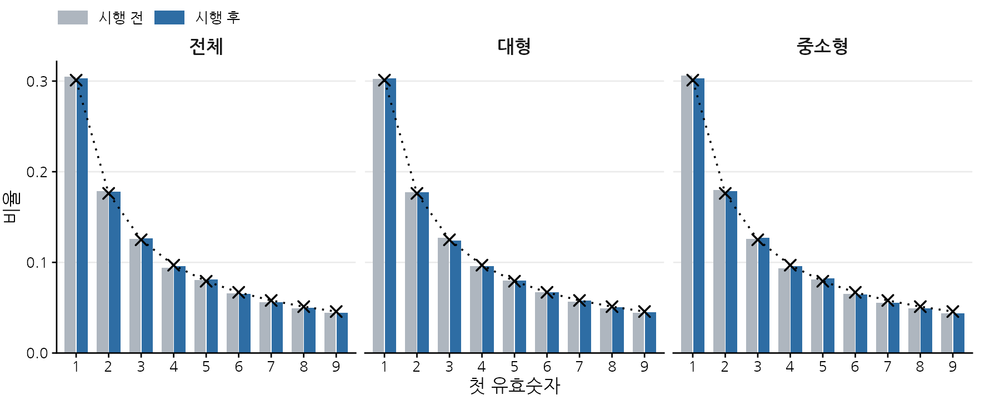
[부록 표-3] 그룹별 5분 거래량의 상위 집중도
[부록 표-3]는 그룹별 5분 거래량의 상위 집중도이다. 왜도와 첨도는 [부록 표-1]의 5분 거래대금 기준 값의 그룹 평균이다. 상위 1%(10%) 비중은 종목–월별로 거래량이 해당 분위수 이상인 5분 구간의 거래량 합계가 그 달 전체 거래량에서 차지하는 비율이며, P99/P50은 종목–월별 상위 1% 분위수와 중위수 비율의 종목별 중위수이다. 시행 전후 비교는 시행월(2024년 7월)을 제외한 종목별 월평균값에 대한 Wilcoxon 부호순위 검정 결과이다.
| 그룹 | 종목수 | 왜도 | 첨도 | 상위 1% 비중(%) | 상위 10% 비중(%) | P99/P50 | 상위 1% 비중 시행 전(%) | 상위 1% 비중 시행 후(%) | 증가 종목 수 | p값 |
|---|---|---|---|---|---|---|---|---|---|---|
| 대형 | 8 | 23.9 | 1,419 | 14.4 | 49.4 | 18.6 | 14.1 | 15.0 | 5/8 | 0.234 |
| 중소형 | 26 | 44.6 | 5,025 | 24.8 | 66.0 | 62.3 | 23.5 | 26.5 | 22/26 | <0.001 |
| 전체 | 34 | 21.3 | 23.8 | 27/34 | <0.001 |
[부록 그림-2] 거래량 CCDF와 멱법칙 적합 예시
[부록 그림-2]는 유동성 상·하위 대표 종목의 거래량 CCDF와 멱법칙 적합 예시이다. 가로축은 5분 거래량을 해당 월 중위수로 나눈 값이며 두 축 모두 로그 척도이고, 빨간 선은 xmin 이상 구간에 적합한 멱법칙이다.
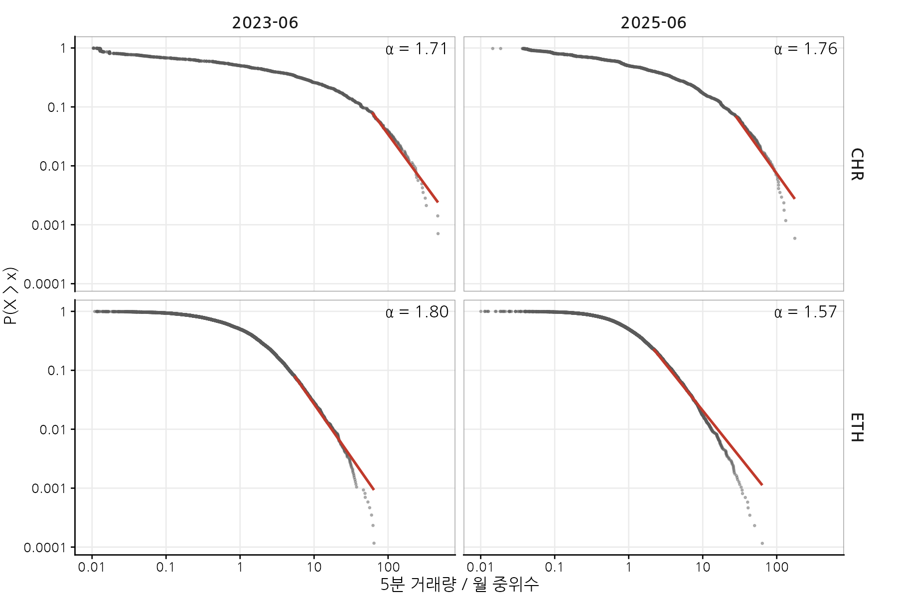
[부록 그림-3] 종목–월 꼬리지수 α
[부록 그림-3]은 종목–월 꼬리지수 α이다. 종목은 관측비율 순으로 위에서 아래로 정렬하였다. 붉은색일수록 α가 작아 꼬리가 두껍고 흰색은 α=2이며, 검은 파선은 법 시행일(2024년 7월 19일)이다.
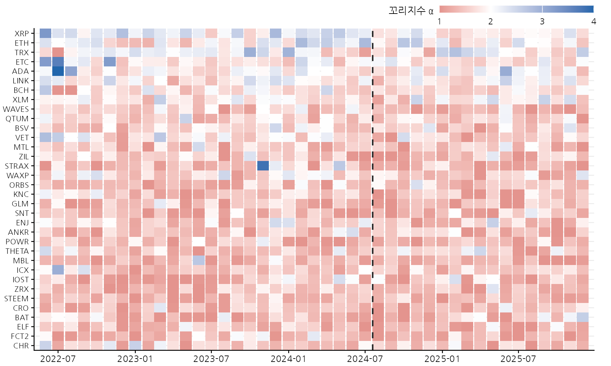
[부록 그림-4] 그룹별 시간대별 거래량 비중
[부록 그림-4]는 종목별로 시간대별 거래량 비중을 구한 뒤 그룹 내에서 평균한 것이다. 회색 수평선은 균등 배분 시의 비중(100/24 ≈ 4.2%)이다.
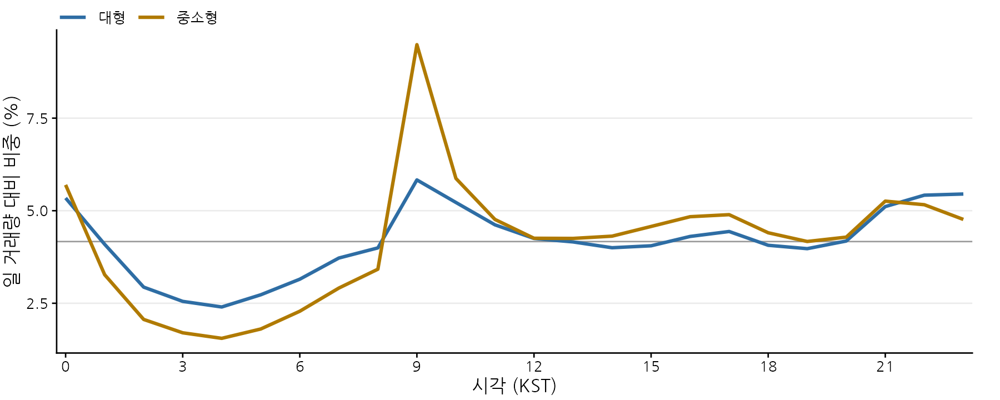
[부록 표-4] 그룹별 10분 무거래 구간 비율
[부록 표-4]의 무거래 구간 비율은 1 − (거래가 있는 10분 구간 수)/(자료가 존재하는 일수 × 144)이다. 시행 전후는 법 시행일(2024년 7월 19일)을 기준으로 구분하였으며, p값은 종목별 시행 전후 값에 대한 Wilcoxon 부호순위 검정 결과이다.
| 그룹 | 종목수 | 평균(%) | 최소(%) | 최대(%) | 시행 전(%) | 시행 후(%) | 증가 종목 수 | p값 |
|---|---|---|---|---|---|---|---|---|
| 대형 | 8 | 2.3 | 0.4 | 7.6 | 2.8 | 1.6 | 3/8 | 0.141 |
| 중소형 | 26 | 30.3 | 11.3 | 47.4 | 29.6 | 31.3 | 15/26 | 0.347 |
| 전체 | 34 | 23.7 | 0.4 | 47.4 | 23.3 | 24.3 | 18/34 | 0.561 |
[부록 표-5] β 값에 따른 EDM 변화점 탐지 결과(보정 표본)
[부록 표-5]은 EDM의 벌점 β에 따른 변화점 탐지 결과이다. 보정 표본은 종목당 무작위로 뽑은 6개월(총 204개 종목–월)이며, 섞은 시계열은 전처리된 시계열의 시간 순서를 무작위로 재배열한 것이다. 월평균 변화점 수는 일평균 변화점 수에 30을 곱한 값이고, 굵은 글씨는 채택한 β이다.
| β | 섞은 시계열: 변화점 0개 비율(%) | 실제 시계열: 변화점 0개 비율(%) | 섞은 시계열: 월평균 변화점 수 | 실제 시계열: 월평균 변화점 수 | 섞은 시계열 0개 비율(%): 대형 | 섞은 시계열 0개 비율(%): 중소형 |
|---|---|---|---|---|---|---|
| 0.002 | 6.9 | 0.5 | 380.9 | 342.0 | 22.9 | 1.9 |
| 0.01 | 49.0 | 27.5 | 20.4 | 49.7 | 87.5 | 37.2 |
| 0.02 | 82.8 | 65.2 | 1.13 | 5.90 | 97.9 | 78.2 |
| 0.025 | 92.6 | 80.4 | 0.28 | 2.24 | 97.9 | 91.0 |
| 0.0275 | 95.6 | 84.8 | 0.16 | 1.91 | 97.9 | 94.9 |
| 0.04 | 98.5 | 94.1 | 0.06 | 0.39 | 97.9 | 98.7 |
[부록 표-6] 벌점 계수 k에 따른 PELT 변화점 탐지 결과(보정 표본)
[부록 표-6]은 PELT의 벌점 계수 k에 따른 같은 결과이다. 벌점은 k × log n이며(n은 시계열의 관측치 수), 그 밖의 사항은 [부록 표-5]과 같다. 굵은 글씨는 채택한 k이다.
| k | 섞은 시계열: 변화점 0개 비율(%) | 실제 시계열: 변화점 0개 비율(%) | 섞은 시계열: 월평균 변화점 수 | 실제 시계열: 월평균 변화점 수 | 섞은 시계열 0개 비율(%): 대형 | 섞은 시계열 0개 비율(%): 중소형 |
|---|---|---|---|---|---|---|
| 3 | 69.6 | 0.0 | 0.71 | 33.1 | 62.5 | 71.8 |
| 4 | 97.5 | 0.0 | 0.03 | 20.8 | 97.9 | 97.4 |
| 5 | 99.5 | 0.0 | 0.00 | 14.5 | 100.0 | 99.4 |
| 6 | 100.0 | 0.5 | 0.00 | 11.2 | 100.0 | 100.0 |
| 8 | 100.0 | 2.0 | 0.00 | 7.5 | 100.0 | 100.0 |
| 12 | 100.0 | 3.9 | 0.00 | 4.6 | 100.0 | 100.0 |
[부록 그림-5] 종목–월 PELT 일평균 변화점 수
[부록 그림-5]는 PELT(k=4)로 탐지한 종목–월 일평균 변화점 수이다. 종목은 관측비율 순으로 위에서 아래로 정렬하였으며, 검은 파선은 법 시행일(2024년 7월 19일)이다.
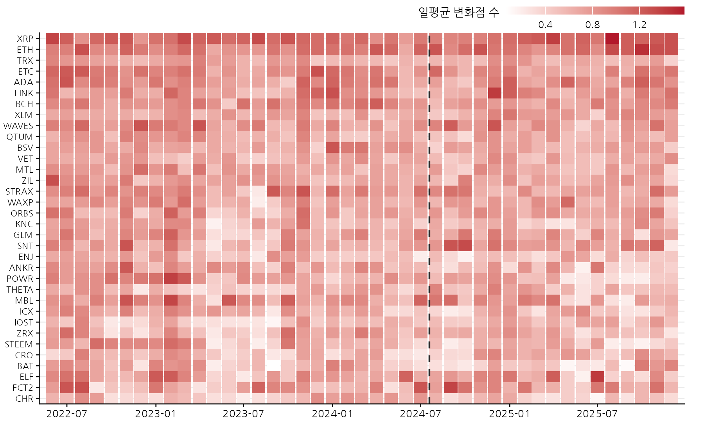
[부록 표-7] 벌점 계수에 따른 시행 전후 비교
[부록 표-7]은 벌점 계수에 따른 시행 전후 비교이다. k=4(굵은 글씨)가 주된 분석이며, 그 밖의 사항은 본문 [표 17]과 같다.
| k | 대형 시행 전 | 대형 시행 후 | 대형 감소 종목 | 대형 p값 | 중소형 시행 전 | 중소형 시행 후 | 중소형 감소 종목 | 중소형 p값 | 이중차분 추정치 | 이중차분 p값 |
|---|---|---|---|---|---|---|---|---|---|---|
| 3 | 1.311 | 1.284 | 4/8 | 0.624 | 1.130 | 1.034 | 20/26 | 0.004 | −0.069 | 0.193 |
| 4 | 0.872 | 0.866 | 4/8 | 0.834 | 0.685 | 0.628 | 19/26 | 0.022 | −0.051 | 0.197 |
| 5 | 0.641 | 0.641 | 5/8 | 1.000 | 0.478 | 0.431 | 19/26 | 0.012 | −0.047 | 0.173 |
| 6 | 0.506 | 0.513 | 3/8 | 0.624 | 0.359 | 0.327 | 17/26 | 0.040 | −0.040 | 0.190 |
＋용어 풀이
- 종목–월
- 한 종목의 한 달 치 자료. 이 연구의 기본 분석 단위(34개 종목 × 43개월 = 1,462개).
- 관측비율
- 하루 288개 5분 구간 가운데 거래가 있었던 구간의 비율. 거래 활성도의 지표.
- MAD · 초과 MAD
- 첫 자리 비율과 벤포드 비율의 차이를 평균한 값. 초과 MAD는 관측치 수 때문에 생기는 몫(E[MAD])을 뺀 값.
- χ² 적합도 검정
- 관측 빈도와 기대 빈도의 차이를 보는 검정. 표본이 크면 사소한 차이도 유의해진다(과잉 검정력).
- CCDF
- “이 값보다 클 확률” P(X>x)을 그린 곡선. 로그-로그 축에서 멱법칙은 직선이 된다.
- 꼬리지수 α · Hill 추정량
- CCDF가 줄어드는 속도. 작을수록 큰 값이 자주 나온다. Hill 추정량은 그 최우도 추정량.
- Pareto–Lévy 영역
- 1<α<2. 금융시장 거래 규모에서 흔히 관찰되는 범위.
- KS 거리
- 두 누적분포 사이의 최대 차이. 꼬리 시작점을 정하는 데 썼다.
- 변화점 · PELT
- 시계열의 성질(수준·분포)이 바뀌는 지점. PELT는 벌점을 고려한 최적 분할을 빠르게 찾는 알고리즘.
- 벌점 k
- 변화점 하나를 추가할 때 치르는 비용(k × ln n). 클수록 변화점을 적게 찾는다.
- Wilcoxon 부호순위 검정
- 짝지은 전후 차이의 크기 순위를 이용해 0을 중심으로 대칭인지 보는 비모수 검정. 8개 종목이 모두 같은 방향이어도 p값은 약 0.014가 최소이다.
- Wilcoxon 순위합 검정
- 두 독립 집단(예: 대형과 중소형의 변화량)을 순위로 비교하는 비모수 검정.
- 이중차분(DiD)
- 처치군의 전후 변화에서 대조군의 전후 변화를 빼서 공통 충격을 제거하는 방법.
- 평행추세 가정
- 처치가 없었다면 두 집단이 같은 기울기로 움직였을 것이라는 가정. DiD가 효과를 나타내기 위한 조건.
- 이벤트 스터디
- 기준 시점(여기서는 2024년 상반기) 대비 각 기간의 그룹 간 차이를 하나씩 추정해 시행 전 차이와 시행 후 변화를 함께 보는 방법.
- 삼중차분
- 빗썸의 그룹 간 이중차분이 바이낸스의 그룹 간 이중차분과 다른지 보는 방법.
- 군집 표준오차
- 같은 종목의 월별 오차가 서로 상관될 수 있음을 고려해 종목 단위로 계산한 표준오차.
- Holm 보정
- 여러 번 검정할 때 우연히 유의해지는 것을 막기 위해 p값 기준을 단계적으로 엄격하게 하는 방법.
- p값
- 효과가 없다고 가정할 때 지금만큼 또는 더 극단적인 결과가 나올 확률. 0.05보다 작으면 관례상 ‘유의’라고 한다. 유의하지 않다는 것은 효과가 없다는 증명이 아니라 증거가 부족하다는 뜻이다.
원고: 이준호·최범전, 「가상자산이용자보호법 시행이 국내 가상자산시장의 워시 트레이딩에 미친 영향: 거래 데이터 기반 실증 분석」(Working paper, 2026년 11월). 표와 원고 그림은 원고에서 그대로 옮겼고, ‘해설 그림’과 11절은 이 페이지를 위해 추가한 것이다.
자료: 빗썸 5분봉(크로스앵글), 바이낸스 USDT 5분봉(data.binance.vision), 코인마켓캡 시가총액. 이 페이지는 연구 내용의 해설이며, 금융감독원의 공식 견해가 아니다.